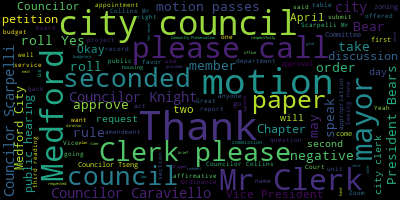
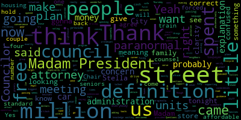
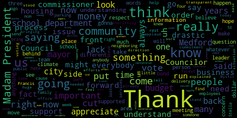
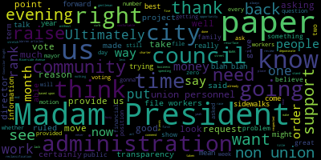
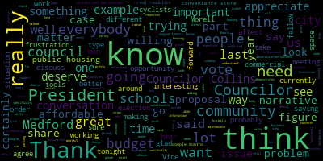
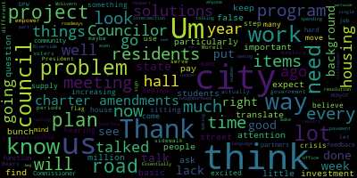

AI-generated transcript of City Council 04-25-23
English | español | português | 中国人 | kreyol ayisyen | tiếng việt | ខ្មែរ | русский | عربي | 한국인
Back to all transcripts
[Morell]: City Council is called to order Mr. Clerk please call the roll. Announcements, accolades, remembrances, reports, and records. 23-094, offered by Councilor Caraviello. Be it so resolved that the Medford City Council send its deepest and most sincere condolences to the family of Stella Tanaglia. Stella worked for the city of Medford for 30 years in the finance department. Her presence in our community will be sorely missed. Councilor Caraviello.
[Caraviello]: Thank you, Madam President. I only got to meet Stella a few times in my career at City Hall, and she was a wonderful woman. And Steve, her son, is a supervisor of the DPW. I just wanted to send her family our condolences on her passing.
[Scarpelli]: Thank you, Madam President. Thank you. Covell. Mr. Council cover. I'll bring this forward. I know that, uh, it's been a very difficult time for the value family. I know that Steve not only just lost mom this past week, but lost his sister a few weeks ago after brave battle of cancer. Um, Stella was an amazing person. If you knew her, walking the halls here at Medford High, you really, you really know, knew someone who loved the city of Medford. I had the privilege of knowing Stella as a member of our congregation at St. Francis of Assisi and mom and, um, and, uh, and stellar and the rest of the mother's club at ST Francis really made an impact in people's lives. And, uh, it's, uh, she's definitely a person we're gonna miss here in Medford, and we send our condolences to Steve and the rest of the family. Thank you.
[Morell]: Thank you, Councilor Scarpelli. Councilor Knight.
[Knight]: Madam President, thank you very much. I just want to join my colleagues in expressing my condolences to the family. Over the years, Stephen and I have become close friends and he's a great person. He was raised by two great parents and it shows. Stella's values show through and through in our son, Stephen. It's been a difficult time, as Councilor Scarpelli said, for the family and I just want to join in offering my well wishes to the family throughout this difficult time.
[Morell]: Thank you, Councilor Knight. Please rise for a moment of silence. So I'm just going to take the roll call for that motion.
[Caraviello]: If we can name do tonight's meeting in memory of Stella.
[Morell]: Thank you. Councilor Caraviello. So on the motion of councilor Caraviello seconded by councilor Scarpelli, Mr. Clerk, please call the roll.
[Hurtubise]: Yes. Yes. Yes. Yes. Yes.
[Morell]: Yes, I'm in the infirmary, your motion passes. Records, the records of the meeting of April 11th, 2023 were passed to Councilor Knight. Councilor Knight, how did you find them? The motion of Councilor Knight, seconded by Councilor Scarpelli. Mr. Clerk, please call the roll.
[Hurtubise]: Mr. President. Yes. Councilor Caraviello? Yes. Councilor Collins?
[Collins]: Yes.
[Hurtubise]: Councilor Knight? Yes. Councilor Scarpelli? Yes. Councilor Tseng?
[SPEAKER_09]: Yes.
[Hurtubise]: Councilor Morocco?
[Morell]: Yes. Seven in the affirmative, zero in the negative, the motion passes. Reports of committees, 22-533, April 12th, Committee of the Whole Zoning RFP report to follow. So this was a Committee of the Whole we had last week to work with representatives from the planning department to refine the scope of work to conduct the next phase of zoning. We have a motion from Councilor Knight to approve seconded by Councilor Scarpelli. Mr. Clerk, please call the roll.
[Hurtubise]: Yes. Yes. Yes. Yes.
[Morell]: Yes, seven in front of zero and then I have motion passes to 3.093 April 18 2023 committee the whole community development block grant action plan report to follow. So this is where the sub recipients came before us and presented. They're asking for funds for as well as a director Alicia Hunt shared the plan offering the motion of Councilor Scarpelli to approve seconded by Councilor Knight, Mr. Clerk, please call the roll.
[Hurtubise]: Yes. Yes. Yes. Yes.
[SPEAKER_09]: Yes.
[Morell]: Yes. Councilor, Councilor Collins, Mr. Clerk, please call the roll.
[Hurtubise]: Yes. Yes. Yes. Yes. Yes. Yes. Yes.
[SPEAKER_09]: Yes.
[Morell]: Yes. So I mean in front of zero negative the motion passes. hearings. 23-083. We go to a city clerk's office notice of a public hearing the Medford City Council will hold a public hearing in the Howard F. Alden chambers at Medford City Hall 85 George P. Hassett Drive Medford and via zoom on Tuesday, April 25 2023 at 7pm a link to be posted no later than Friday, April 23 for a special permit for use to allow cafe use quote eating place in accordance with Medford Zoning Ordinance Chapter 94 to operate cafe quote eating place. At 6 40 Boston Avenue, Medford Mass 02155 said site being located in an industrial zoning district as follows uses a cafe or eating place under 94-11.6.2 and 94-3.2 Petition and plans may be seen in the office of City Clerk, room 103, Medford City Hall, Medford, Massachusetts. Call 781-393-2425. For any accommodations, aides, the City of Medford is an EEOAA 504 employer. By order of the City Council, sign Adam L. Hurtubise, City Clerk, advertised in the Medford Transcript and Somerville Journal, April 6th and 13th, 2023. Do we have the petitioner before us to give us a brief summary of- Mr. Hurtubise, if you could give us a brief summary of the petition before us and what you're seeking, what your client is seeking.
[SPEAKER_07]: Sure. Good evening, Madam President, members of the council. My name is Ian Hurtubise, and I'm here for the applicant 640 Medford LLC, and I'm from Dr. McLennan and Fish. It's 155 Seaport Boulevard in Boston. So as noted in the introduction, we're seeking approval for our petition. a cafe use, which is also known as an eating place without drive through in the zoning ordinance. And we envision this as like a coffee shop serving pastries and breakfast sandwiches and maybe sandwiches at lunchtime, something along those lines. Do you mind if I share the screen? I can give a little background and show the location of the property and such.
[SPEAKER_03]: Yep, please do.
[SPEAKER_07]: Can you see my screen?
[Morell]: It's in the, there we go. Yep, we can see it now.
[SPEAKER_07]: Okay, so this red here is the location of the property. It's located along Broadway and Somerville. This is the ball square T station. Tufts is over here. So just to orient yourself, this is the location here. This is a existing five story residential building consisting of 42 rental units that was built around 2016. It's worth noting that this was permitted by another party. My client acquired this after construction in 2019. Just for a little more background, the original approvals for this back in 2015 by the Zoning Board of Appeal included ground floor retail, but did not sufficiently describe location. So as the building is now up and running, we've got this vacant retail space on the ground floor. As you can see, this is what the Sphere Apartments looks like. This is facing towards Ball Square here. And the space is located here. I've got a couple other plans I can show you. This also is a is a site plan showing the cafe look location along Boston Avenue here.
[Morell]: And a question from Councilor Knight Councilor Knight.
[Knight]: If I'm hearing this correctly, I believe the gentleman just said that I'm sorry, I believe the gentleman just said this was, you know, look like it was going to be a purely residential project and then the reason they. developed with some sort of commercial component was based upon the wishes of the community of the city of Medford during the planning and development process. Is that correct?
[SPEAKER_07]: That's a good question. I wasn't there in 2015 when it was permitted, but the permits included retail space. It just wasn't described adequately to allow for a cafe now. that to, you know, to make clear what type of use we would like to see in this space.
[Knight]: Yeah, because I remember when when this went through, and I think that that was part of the deal was that the city was trying to promote this mixed use development and adding commercial components to residential structures. So ultimately, this vacant retail space is actually a creation of our own public policy. I see no reason why we should stand in the way and I'd move for approval on that. I don't think this is an issue. I know this is a public hearing, but this is something I certainly don't have any problem
[Scarpelli]: Thank you. Thank you. Thank you. Thank you. Thank you. Thank you. Thank you. Thank you. Thank you. Thank you. Thank you. Thank you. Thank you. Thank you. Thank you. Thank you. Thank you. Thank you. Thank you. Thank you. Thank you. Thank you. Thank you. Thank you. Thank you. Thank you. Thank you. Thank you. Thank you. Thank you. Thank you. Thank you. Thank you. Thank you. Thank you. Thank you. Thank you. Thank you. Thank you. Thank you. Thank you. Thank you. Thank you. Thank you. Thank you. Thank you. Thank you. Thank you. Thank you. Thank you. Thank you. Thank you. Thank you. Thank you. Thank you. Thank you. Thank you. Thank you. Thank you. Thank you. Thank you. Thank you. Thank you. Thank you. Thank you. Thank you. Thank you. Thank you. Thank you. Thank you. Thank you. Thank you. Thank you a little nervous about now the Uber Eats and all these delivery services, the park on front and run in, and what it would cause for that neighborhood. So is there parking there?
[SPEAKER_07]: Understood, Councilor, and that makes a lot of sense. There is now visitor parking along the street here. I can't recall how many spaces off the top of my head, We envision this as the transit-oriented development. We're right across the street from a tea station. We're thinking residents of the building and of the neighborhood stopping here for coffee on their way to work, or on their way to the tea, or back, or vice versa. So that's kind of how we see it.
[Scarpelli]: No, that's a great idea. And I understand that if that was 10 years ago, but now with all these delivery services, that's something that when we look for these types of permits, it's something that I have to wait for the fact that they're not gonna park and then walk over. They're gonna put three or four deep and run in. And I would hate to put any limits on anybody in their business, but that's my concern right now. But thank you, Councilor.
[Morell]: Thank you, Councilor Caraviello.
[Caraviello]: I think that was, I think when the first opened up, that was a grocery store, if I'm correct.
[Morell]: Yeah, or a convenience store.
[Caraviello]: I think if the attorney can verify that.
[Morell]: Do you know what was in that space prior?
[SPEAKER_07]: Was that a grocery store? That's a good question. You know, I've got Paul Spivak, he's the property manager on the line there as well. Maybe Paul can give us some info.
[Caraviello]: I do recall that that's what was in there for a while there. And he did serve coffee and stuff, but it was more of a convenience store than an actual cafe originally.
[Morell]: Thank you. Councilor Collins.
[Collins]: Thank you, President really I also just wanted to know this is I walked on this part of Boston have very frequently so I've seen what's you know was currently or was formerly in the space when it was a convenience store. This strikes me as if the narrative here is you know we're trying to figure out what to do with this ground floor level that has to be commercial we're trying to figure out how to make better use of the space you know I'm certainly willing to go ahead and approve this if you know the owner wants to try it as a cafe instead of a convenience store it is true I almost never saw anybody going into that convenience store. I definitely hear Councilors Garpelli's concerns about parking I think that making sure that we're not obstructing the roadway to ensure the safety of the roadway is really really important. On the other hand, it's kind of hard for me to look at a potential commercial space and have it go underutilized. You know, I think that we see the issue of cars parked where they shouldn't be all over the city. To me, that's an enforcement issue. You know, I don't want us to be tampering down on commercial development. I'd rather see rather CSB doing proper enforcement of where people shouldn't shouldn't be parking. Thank you.
[Morell]: Thank you, Councilor Collins. Mr. Is there anything else that you want to share for your presentation?
[SPEAKER_07]: No, that pretty much does it in case anyone has any questions, but that's pretty much the overview. Thank you.
[Morell]: Thank you. Whereas this is a public hearing, I need to open it up. So we're going to open up this public hearing. If there is anyone who would like to speak in favor of this paper, please either come up to the podium or raise your hand on Zoom. And that would be you as well, Mr. Hurtubise, saying you're in favor of this paper, I assume.
[SPEAKER_07]: Yes, to go on the record, I'm in favor of this.
[Morell]: Thank you. Anyone else would like to speak in favor of this? Seeing none, this portion of the public hearing is closed. Is there anyone who would like to speak against this petition? Please come up to the podium or raise your hand on Zoom. Seeing none, this portion of the public hearing is closed as well. So we do have a motion to approve from Councilor Knights second. I had a second but sounds like my Councilor Carmel, but we did have something raised brought to our attention by director of planning development sustainability hunt today, and that our recent update to the zoning We had the process was changed to send special permit to this, the Community Development Board for opinion before voting on it by bears.
[Bears]: In further review, we actually found that there was some conditions on that even prior to the reconfiguration so it's not just a reconfiguration thing. My recommendation would be twofold, would be to approve pending any comment or feedback from the Community Development Board, as well as the six day public comment period, if we can amend to that.
[Morell]: Okay. And Director Hutt, is there anything you wanted to add to our very brief explanation?
[Hunt]: Thank you. All right, sure. Thank you, Madam President. I was reviewing this and there are some criteria that's supposed to be reviewed about the social and economic community needs, traffic flow and safety, adequacy of utilities and other public services, compatibility with the other structures in the neighborhood, impacts on the natural environment. and the proposals compatibility with the purposes of the city's comprehensive plan. Um, and so when this is referred to the development board we're happy to just reply back with that information. Um, there is the ability to put conditions on this but as this is already a completely built out location. I'm not clear that any of these. conditions that are allowed under our zoning ordinances would be relevant for this, but the city council would be, or the, sorry, the city board would be happy to review it. Just to be clear, it doesn't require a public hearing. So we would just put it on the next available city board meeting, which I don't have that date in front of me, but it is not tomorrow night. Tomorrow night, there is a city board hearing, but we need to put it, we need 48 hours notice to put it on the agenda. And then we would get back to the city council with the letter with our recommendations. On first glance, it seems like it would be a lovely addition to the neighborhood and the benefit to the residents, but that's the city board will weigh in on that.
[Morell]: Thank you. So Councilor Knight, you had a motion and would you like to amend it? We'll take it. So we have the motion from Vice President Bears to approve pending comments from the Community Development Board and the six day public comment period. I think we have a second from Councilor Scarpelli. Mr. Clerk, do you have that language? Okay, please call the roll when you are ready. Councilor Scarpelli. He got it first. Yes, 70 affirmative zero negative. The motion passes 23-084 legal notice of a public hearing the Medford City Council will hold a public hearing in the Howard F Alden chambers at Medford City Hall 85 George P has to drive Medford and via zoom on Tuesday, April 25 2023 at 7pm, a link to be posted no later than Friday, April 21 2023 on a petition from a lean teen doing business as mainly in spiritual shop 16 Main Street Medford Mass for a paranormal license and for a special permit for use for retail and services, paranormal services and sales in accordance with Medford Zoning Ordinance, Chapter 94, to operate a retail and service establishment at 16 Main Street, Medford Mass, 02155. Said site being located in a commercial 1C1 zoning district as follows, use for retail and services, paranormal service and sales under Section 5.F of Medford Zoning Ordinances, Chapter 94. petition and plans may be seen the office of the city clerk room 103 Medford City Hall Medford mass call 781-393-2425 for accommodations aids the city of Medford is an EEO a 504 employee by order of the city council sign Adam L her to be city clerk advertised in the Medford transcript and some rural journal, April 6, and April Do we have a representative? Yep. If the petitioner wants to come up, just give us a brief overview of the permit, the special permit you're seeking. Yes.
[SPEAKER_02]: Okay, so just name and address for the record, please. My name is Maylene Tenney. Hi, guys. Welcome. Thank you. So my initial, you know, want for the actual store itself is to provide a lot of different type of varieties, but mainly it's crystals. Sometimes if they don't know exactly what it is, what crystal helps with what or whatnot, I do give information on that. And I actually have a little bit of my own background of working with crystals and stones and energy for many clients. And also, you know, the, the, for the agenda itself, you know, if somebody is interested in learning more, you know, on the backside of meditation and, you know, yoga, most likely that's something they want to do is a kind of not like a package, but a variety, you know, and energy. to work with, you know, for themselves or, you know, just to have fun or just to be a little bit more educated and background on it. And I do provide those services. But mainly the store itself would be, you know, crystals and some handmade jewelry and some arts and crafts and that nature. Yes. Thank you. Any questions from the council at this time? Oh, and some novelty. They're interested in some reading also some new readings.
[Scarpelli]: How many employees are employed?
[SPEAKER_02]: It's just myself.
[Scarpelli]: Okay. And this is a business that runs successfully in neighboring communities, correct?
[SPEAKER_02]: Say that again?
[Scarpelli]: This is a business that also runs in a neighboring community?
[SPEAKER_02]: It can, yes.
[Scarpelli]: No, I think this is something different and if it brings more people to the square, I think it's important. And I might find myself there one day. Everybody can use some help. So anyway, so I wouldn't seek to move approval, but I know it's public hearing.
[Morell]: Thank you, Councilor Caraviello.
[Caraviello]: Thank you, Madam President. So in reviewing this, we were looking at the definition of paranormal. And see, this is where we needed an attorney to give us a little guidance on exactly the meaning of what this is. And, you know, there's some language here that I'm not gonna lie to you, I'm a little confused with.
[SPEAKER_02]: So when I heard the paranormal licensing itself, I was a little bit confused because immediately my mind went to, you know, ghosts and whatnot. So I was like, wait a minute, but I guess from the works that I would do or provide as services, it falls under that. So there's a variety of what is paranormal in that sense. I'm still trying to understand it myself.
[Caraviello]: Yeah. See, if we had an attorney to give us a little, so I guess a little bit more clarity on what the definition is.
[SPEAKER_02]: I mean, if you like my opinion, I believe it falls under like the act of arts in a sense, um, spiritually speaking, you know, For me to be working with stones and energy, it's a spiritual realm, so most people wouldn't know exactly how to, I guess, I don't label it, so it's under that, I mean, it's under the act of paranormal. I don't understand it 100% either, but it was interesting to me as well.
[Caraviello]: I'm just a little hesitant voting on something that I really have no knowledge of and no clarity on.
[SPEAKER_02]: Is there anything I can do to help?
[Caraviello]: No, I'm just saying, before you came in, myself and the other council, we were looking at the definition of paranormal, and I was just a little confused on some of the definitions on what the meanings of the services that are provided under a definition of paranormal.
[Collins]: Thank you, Councilor Collins. Thank you, President. Thank you for being here to share more about your, your business and I was looking also at the definition of this type of retail establishment in our current setting code and I have to agree with my fellow Councilor or the definition that exists in our muni code is certainly outdated included some. interesting references from whenever it was written, but in this case, you know, clearly from your description, it's a store that's providing services and retail of a spiritual inclination. I agree with Councilor Scarpelli, I think this is going to bring an interesting flavor to Medford Square that doesn't currently exist there. And you know, towards the goal of bringing more people of all different inclinations to our business districts. I think this could be a great thing for Medford. So thank you.
[Knight]: Thank you, Councilor Knight, Madam President, thank you very much. Yes, I think it is important to point out you know the term paranormal is a dated term that's included in a zoning act and the question isn't whether or not they're performing functions that are paranormal in nature it's, you know, whether or not this function that they're performing where when it's best fit is underneath the zoning act right now that's what it falls under based upon the definitions that have been provided to us beforehand I certainly have no problem with the entrepreneur pursuing an opportunity to create a very successful business here in the city of Medford especially in a downtown district and that there is a market for this type of business I mean we see Salem Massachusetts for example with thrives on this type of business so I mean I wish you the best of luck and you certainly have my support.
[Morell]: Thank you.
[Bears]: I was gonna say at least it's another bank. So, but on this specific motion after we open the public hearing I just, I would, I would like to make the same motion that we made on the prior special permit, but I'll wait for the public here to be open for the discussion accounts at this time.
[Morell]: Seeing none, as this is a public hearing we need to open up the public hearing so anyone who would like to speak in favor of this petition, please raise your hand on zoom or come to the podium. Assuming you are in favor of this petition. Yes. Great. Do you want to, you can come up and give your name just so we can just for the record, just officially.
[SPEAKER_00]: My name is David Bimbo. I thank you for having us. And I'm, I, I'm with this, this business. Thank you.
[Morell]: Thank you. I also see Melanie. I'm going to ask you to unmute. Melanie, name and address for the record, please. So speaking in favor of this petition.
[Tringali]: Yeah, this is Melanie Tringali. I live at 116 Forest Street, and I'm all for any new retail on the square to help bring in some new energy as well as some new foot traffic. We definitely need it. So, and I think I'm very aware of spirituals and the crystals and I think it's a great thing to have.
[Morell]: Great, thank you. Anyone else who would like to speak in favor of this petition? Seeing none, this portion of the public hearing is closed. Is there anyone who would like to speak in opposition of this paper petition? Raise your hand on Zoom or come up to the podium. Seeing none, this portion of the public hearing is closed. So we have a motion from Vice President Bears to approve pending comments from the Community Development Board and the six-day conference period. Seconded by Councilor Knight. Mr. Clerk, please call the roll when you're ready.
[Hurtubise]: Vice President Bears. Yes. Councilor Caraviello. Yes. Councilor Collins. Yes. Yes, that's the same.
[SPEAKER_09]: Yes.
[Morell]: Yes, seven the infernos during the night of the motion passes. Thank you. Thank you guys. Thank you. We'll probably have you right back.
[Hurtubise]: Yeah, we have we have you.
[Morell]: We have you next. Yeah, we have you again. petitions presentations and similar papers 23095 petition for paranormal license by mailing 10 e 198 Broadway Malden mass or 2148 for a mailing spiritual shop 16 Main Street Medford mass. So you already gave us the preview. I'm gonna turn it over to licensing subcommittee chair, Councilor Scarpelli.
[Scarpelli]: Again, I see everything is in order and the petitioners already explained the questions on employees, how it affects with parking, everything is in place and in order.
[Hurtubise]: Councilors, comments on everything?
[Morell]: Thank you, Councilor Scarpelli. Any further comments or discussion from the council? So on the motion of Councilor Scarpelli to approve, seconded by Councilor Knight. Mr. Clerk, please call the roll.
[Hurtubise]: Yes. Yes. Yes. Yes. Yes.
[Morell]: Yes, seven the affirmative, zero in the negative. The motion passes, congratulations.
[Bears]: Madam President.
[Hurtubise]: Councilor Caraviello, sorry.
[Morell]: So on a motion of Councilor Caraviello to suspend the rules and take two, three, zero.
[Bears]: It's under reports to it's the elections manager and elections commission.
[Morell]: Someone's still gonna give me the number though.
[Bears]: It's 23026, it's the last thing on the last page of the agenda.
[Morell]: So on the motion of Councilor Caraviello to suspend the rules and take paper 23026 off the table, seconded by- Second, could I amend the motion to also take 23285 after that? As well as 23285.
[Hurtubise]: You're doing so well.
[Morell]: I'm running all over the place. So on the motion of Councilor Caraviello, seconded by Vice-Mayor Bears, Mr. Clerk, please call the roll.
[3gvhm0AovZU_SPEAKER_43]: Yes.
[Morell]: Yes. So in the first year, the negative the rules are suspended 23-026 election manager and Elections Commission's commission provide an update on the status of the 2022 elections after action report requested by the City Council last fall. I see we have Henry Miller in with us.
[SPEAKER_12]: A few other folks from the election as well.
[Morell]: So just name it.
[SPEAKER_12]: This is Henry Moran, Election Commission room 102.
[SPEAKER_00]: Hi, my name is Anthony Nadella, Election Commission, Room 102.
[Tringali]: Good evening, Erin DiBenedetto, Elections Commission, Room 102.
[SPEAKER_02]: Melissa Ripley, Elections Commission 102, Election Manager.
[SPEAKER_12]: Okay, so we did, we submitted the report, but you know how it is, there's heavy traffic in city hall, it took longer than expected. But finally, we synchronized our time today, so we're gonna do the presentation and make it. I believe almost everything in here, you have seen it, you heard it. But the thing is, we're trying to get the community on board to understand what we're trying. Because you have to remember, we are still in a transition mode, from one form of election office to another form of election office. I think you guys created that office anyway, right? So we're talking about complaint. Were there any complaint? Okay, if you show me a good election, any election without a complaint, it won't be an election. It'll be a selection. There's always issues. It's what you do with the issues that's more important. So for instance, one of the first thing, we had an issue with pole pads. We know what took place with the pole pads. that the Our spare, we had our spare, just in case. Because anything computerized, you can go, they take the electricity, you need to find your voters list. But one of the thing that I personally, on November election, I stopped to 16%. The reason I didn't say 18, because two of them the same up and running, except for one, because we run into an issue at the former Columbus School because it was open lit. I'm sure some of you I spoke with on that day that we had an issue. We had to go through the firefighter. But we know how to deal with that the next time. It's not going to happen. As we speak right now, we have election coming up in September and November. I didn't skip the early voting. This is a total different game, because it's going to be here. We already made contact with every location that we're going to have them. We confirmed everybody's going to be on board. Now, we went a little bit further than that, OK? Hey, if I go there, you're not there. Who do I call? Backup number one. Well, suppose backup number one get into an accident coming here. Who do I call? Backup number three. So, we went from one tier to three level to get that in place. So, that's one of the thing I think you guys should give us a medal for doing that because it makes things work faster, okay? There will, we had another issue that was the That was a terrible night. We run longer than expected. We have API sitting right here, okay, waiting for it. Unofficial is unofficial. That night, we tried to contact backup to guide us to what we were gonna do. We're realizing the time, it was gonna be the day after the election, we made a commission We said, we don't give them the commission, the numbers for today, the one that went to the poll. By tomorrow, we'll put everything together and give them still unofficial. Within two days, called by the Massachusetts General Law, we give you the official count. So we've done well. Will that ever happen again? I doubt it. I don't think so because now we already contracted with LHS to be here on site with us. Because we were trying to save money, but I said, LHS, ah, you don't have to show up. We can do it. But things happen, you want them to be here. So the contract is there, signed, they will be with us. So whatever happen, we'll take action towards. So that was the problem with this. Signage. A lot of people talk about signage. I don't know if any one of you remember, because I'm the oldest guy in the room right now. You can say not, because I'm older than you. That day was really windy. It was windy like crazy. The signage we brought, we brought a bunch of new ones. You couldn't put them outside, because there's no place to anchor them on the concrete in front of the schools. Even if you put them, Anywhere, you will have to tie them, and people won't see them. Signage was complete, it was okay. I was dispatched by the election manager, if I do recall, to a specific place for signage, and I went there, we had it in place. that was something that came up because even I personally receive a lot of phone calls about payroll to people. This is something is going to happen. People don't see money. They go, they panic. They go crazy. Okay. Me, I don't see money. I relax. I have done this work here as a volunteer. It took them longer to pay me, but I know it's money now. The money is there, so I'll wait. But we work it out. I even spoke with some of the councils. I spoke with the branch of government here responsible to pay. Eventually, everybody got paid. OK, that was a done deal. Almost to the end. And this is the one that hurt me the most, because that transition was done, and I have no idea at the time I was in charge of a political organization, didn't know when that word was created. I found out the hard way. I'm still trying to understand the logic behind it, the concept behind it. We have seven to A, we have six to A. There's a lack of voter education. If most of you recall, in 2022, we took the entire month of May. We conducted voter education here with the high school, with the senior center. We did it at the West Medford Community Center. Should we hold ourselves responsible because our citizens are not fully educated on voters? I would say yes. But you can always say no, because me, as an intelligent voter, if I go to a polling station to vote for someone, I'm gonna find out everyone who walks to a polling station knows them well who they're gonna vote for. So if you look on that, their name is not there, you can always go back. and tell them, I think we worked this one out, we informed you, and you were happy, you sent us some good information. So the thing we're trying to do, we say, you know, how do we gonna stop that from ever happening again? Well, you know how it's gonna, when you walk, you're gonna know exactly where to go. If you're 62A, you're gonna go to 62A. That way you don't have to get any ballot from, you know, the guy from six to just if I could, Madam President, really quickly.
[Bears]: And just to clarify, this is because we created our priest, the state made it there, they did their redistricting after we did our reprieving thing. So there's some people who are in. Basically, there's two legislative districts that overlap precinct boundaries inaccurately. So there's a piece of a precinct in one state rep district and a piece of a precinct in another state rep district. And that's because they, I just wanted to clarify how we got here.
[SPEAKER_12]: We could have done better than that. We could have make it in a way where you isolate each other. No, I completely agree. And I appreciate that. And we're working on that, but in the near future, on the next election, you know exactly where you're going to go. Yeah. You 628, this is where you're going. We are in the process of looking for other avenue. We'll be circling back to you guys to help us get site in Medford. You know, one of our biggest challenge is ADA compliance. Not too many buildings that we can use have access to my friends, the elders, you know. So that was the issue.
[Bears]: I appreciate the solutions focus. I just wanted people to understand. It was the pandemic delay in the census that then the state house decided to force us to re-precinct before they redistricted. So for the first time in probably 200 years, we had legislative districts that didn't line up with precinct boundaries.
[SPEAKER_12]: I'm not that old.
[Bears]: Thank you.
[SPEAKER_12]: I think you're right, vice president. So what we're going to do from there on, Already we're talking in the election office about voter education, which is mandatory. We have to keep on doing it. We gotta do it. We're working with... the school to see how we get it out. We're working with the elders to see how we get it out. But we're working about new ideas, how to put it in our website, how to get involved with reverse 911. We had never used that in the city. Okay, we gotta do that. something when you go, a flash information on your website when you go there so you know exactly when and where we have elections. So all these little things are in the process of happening. Challenge and issues. election workers. That's one of the biggest issues we face in Medford. Okay, why? Sometimes we don't have enough people to do the work. Why? You confirm with a guy or a lady who's gonna be here working with you tomorrow, and they don't show up. They don't show up. When they don't show up, you have to drag the next person in line. But that next person in line had something else going on. So it makes it a little challenging to do it. But right now, we did an audit of the Workers, and we're trying to change their status to see if they can get them interested in what we're doing. And so far, it went well. It's working. New leadership. You know, anytime you change leadership, you have challenges, okay? I've been so happy. I didn't know the election manager until we start working together. I think the team works well together. You can sit down, iron what's not working, what is working, and make it better. Because we all have the same objective, make the election of Medford-Rothschild square and fair, and smooth too. You guys gonna be up this year, you probably see it. I had conversation with some of you about things that we're doing. You're aware of what we're doing. But one thing I will recommend as I'm speaking, maybe my last chance, who knows, I'm an old guy, I may not see tomorrow. Don't be afraid to make a phone call to find out what we're doing. Because people call me anytime they wanna call me, they do. And anytime I wanna call you guys, I do that. So let's have a conversation because we all want the same thing. for the city of Metro. Right now, there's something we haven't seen in the city, okay? We're in the process of seeing how to utilize that pool. pole pads where the workers can remotely access them should there is a problem. Because when you say computers, everybody shake in the city of Medford, even my wife, who is smarter than I am. I mean, most of you knows my wife. When you say computers, she shake. And that goes for all our workers. So we're working on that. We talk about census. One of the key recommendation, there was a lot of question asked, are we going to do the following? Most of you receive your census the same way as everybody else. No one told us how we do it. It was up, the city, the election manager said, that's how we got to do it. So right now we on, Right on top of our game with the census, we're working with the second wave of people who fail to send their confirmation back. But one of the key thing you got to remember, we have no control over the post office. We don't. We don't. We made arrangements a few years back to make it smooth, because when you send a letter from Medford to Medford, from City Hall to Medford, it used to go from City Hall to Medford to Boston, then back to Medford. Okay. So we had to work that out with the, uh, Paul, uh, Paul master. And he says, okay, this is what we're going to do anything to do with election. It will go Medford to Medford. So we broke that thing. So it's not our control. That's federal. Okay. So this is where we are. Uh, Moving forward, we're already moving forward. For those who doesn't know, because I spoke with one of you who didn't know, we had our election calendar already posted, okay? Because right now we're in a cycle of town election. And following town election, there'll be city election. That's when informations are there for you. You will be happy after looking at it. Don't forget to send the, you know, notes, because a lot of you will be happy what's been what took place and makes it easy to go through and avoid any error. I will rest my case unless you have any questions for any one of you. But I know I know he was gonna ask questions.
[Morell]: Thank you, Henry.
[Knight]: Councilor Knight motion to receive in place a file, Madam President.
[Bears]: Thank you, Madam President, I'll second Councilor nice motion I just want to say thank you to the elections manager the Elections Commission for coming down for putting together this report. One of the reasons I was hoping you guys would come down to present it is that I could read it but I don't have all the context that you all have that maybe in between it and I don't want to say something out of turn you know I requested this originally so I really appreciate appreciate this being presented. I didn't want to read this and then not be able to answer a question from a colleague or say something that maybe had there's been an update since the report was filed or anything like that but I really appreciate the thoroughness of this, it seems like, you know, a, the transition that there's a lot of work going into the transition and it's it's you know, identifying places where processes need to be addressed and improved. There were a few complaints from the last election there's a real solutions focused energy on getting all of that right this time. So I just I appreciate that. and I appreciate the open dialogue and I know it's you know formally us be it resolved that we request this and then be it resolved that you better get this back to us and come down and tell us about it it's a very formal process but I wanted it to be a dialogue I didn't want it to be written communications me reading something you saying something I felt like it was better if we could come down and if anyone had any questions or if there was additional context that you wanted to provide that you've been able to provide it so I really appreciate that and I know that thank you for the offer I'm sure that If we see anything as we lead up to the next election, we'll be sure to be in touch with the commission and the elections manager about it. Thank you, Council.
[Morell]: Thank you, Mr. Bears. Councilor Scarpelli.
[Scarpelli]: Thank you, Madam President. And Henry, especially in such a volatile time in our country when it comes to voting issues, I think you know, having you and your commissioners involved really put should put everybody at ease. The commitment that all of you put in to such an important aspect of our process really should make everybody in the city proud and feel at ease in your efforts because I've known you many years and there isn't a more thorough person or leader in our community so I thank you and the team behind you and all the supporters and helpers that you do have so thank you.
[Collins]: Thank you, President Rowland. Thank you, Henry, and to the rest of the Commission and Elections Manager for being here today. Really appreciate the thorough rundown, you know, as it's been stated, you know, I think we probably all heard from one or two constituents after the last election, sorry, after the last election with some concerns, you know, some confusions, and I think this really details the commission is pretty forward looking being really proactive on, you know, making sure that every is dotted every T is crossed a couple times. So that's really great to hear and it's great to hear all the detail behind that. So clearly this is a team that's really good at working together. We appreciate that. And you know, I'm sure we'll be in touch as September and November. Get closer to hand. Thank you.
[SPEAKER_12]: Thank you.
[Morell]: Any further discussion from the council? Thank you, Henry and the entire thank you. Thank you. Thank you. I have to take the role on this. So on the motion of Councilor Knight seconded by vice versa received place on file. Mr. Clerk, please call the role. Yes, I'm in the affirmative and then I gave motion passes. So person bears that are requested 23285 next and do you have somewhere else you want to go as well? Okay, great. So we will go next to 23285. 23285 to the Honorable President and members of the Medford City Council regarding Community Preservation Committee appropriation requests. On behalf of the Community Preservation Committee, I respectfully request and recommend that your honorable body approve the following recommendations of the Community Preservation Committee, requesting the appropriation of $800,000 from the CPA, including $208,000 from Housing Reserve and remaining $592,000 from General Reserve to the Medford Housing Authority for the Wapling Court Redevelopment Project. The project will be tracked in the Community Development Preservation Fund by category housing. The CPC's recommendation letter is attached and incorporated. Thank you for your consideration. respectfully submitted brand Lungo-Koehn mayor. I have the funding recommendation decision after name is that housing authority address 121 Riverside Ave Medford project. Medford Housing Authority MHA request CPA funds to develop to redevelop the state aid 144 unit elderly slash disabled development walking court walking court sits on a 3.7 acre site and is comprised of nine two story walk up flat buildings, the poor physical condition of the property and configuration of walk up flats is obsolete for the elderly and disabled population that it serves. The redevelopment of Walkling Court provides a vital opportunity to provide replacement units in a high quality, sustainable, and accessible mid-rise development with elevator access and a flexible community space, which will allow seniors to age in place in the transit accessible hillside neighborhood. This project addresses the urgent need for affordable housing in the city of Medford by adding 94 deeply affordable units, 54 new additional senior units, and 40 new additional family units. Eligibility is the community housing slash creation The project will create 94 new public housing units. Recommendation on March 14, 2023, the City of Medford Community Preservation Committee, CPC, voted 5-0-0 to recommend the City Council that the Medford Housing Authority, MHA, be awarded $800,000 of Community Preservation Act funds for the Walkland Court redevelopment project. In reaching their decision, the CPC found that the project meets the CPA objective of funding generation of new affordable housing units at Walkland Court. conditions of approval one as CPA funds can only fund new units not replacement units, the percentage of the contribution of the CPA funds to pre development costs must be equal to or less than the percentage of new units. And to the CPA funds are to be structured as a forgivable loan that will convert to a grant upon their quest zoning approvals to construct 54 new units in addition to the 144 replacement units in phase one. If fewer than 54 new units are permitted, the grant will be proportional as stated above. Roberta Cameron, Chair, Community Preservation Committee. Councilor Knight.
[Knight]: Madam President, thank you very much. This is a project I'm very excited about. This is something that I think dates back to the Burke administration, and it's something that the director, the executive director, Director Driscoll has been keeping us very well apprised of over the years in terms of the progress that's being made in this project. I just want to commend him for the work that he's done. This is one of many funding sources that the Housing Authority has been able to utilize to renovate and revitalize the passes over there. And this project is going to be good for our community, good for our seniors, and it's going to be good in addressing some of the affordable housing shortages that we have here in the community. And for those reasons, I'll be supporting this paper this evening. When we look back at the application that's before us, what comes to mind for me is the multiple, five, six public meetings that we've had on this previously already to discuss what's going on, prepare us for what's going on. That's the way that financial management should take place in a municipality, especially one of this size. So, again, I commend Executive Director Driscoll. for all those work in keeping us informed and for seeing this project through from its beginning stages to its end. It's all too often that we see press releases that say what we're gonna do, but then we never see what we say we're gonna do get done. And I've always known Jeff to be someone that leads by results and not by press releases. And this right here is proof of the pudding, Madam President. So I certainly thank the Community Preservation Committee for their favorable recommendation and I move for approval on the application statement.
[Morell]: Thank you, Councilor. Councilor Caraviello.
[Caraviello]: Thank you, Madam President. I think I want to thank the commission for coming up here. I think we've all talked about affordable housing, affordable housing, and this has 94 units. Am I correct? 98 units. And these will be mostly family units?
[Morell]: Do you want to just come up just so we can hear you on the mic?
[SPEAKER_18]: sorry, Madam President, Jeffrey Driscoll, I'm the executive director of the Medford Housing Authority. Presently, there's 144 units on the site that will be increased to 198, and then there will be 40 additional units that will be family units.
[Caraviello]: Right, so we'll be adding families into that group.
[SPEAKER_18]: Yes, definitely. And some of those 40 units, in particular, 24 of them, will be in a building that will be accessible. And there will be there will be accessible units available for families handicapped accessible.
[Caraviello]: And what about for seniors? Would there be sections for seniors only?
[SPEAKER_18]: Or will they be mixed in with everybody else that what what we're anticipating doing is on the back end of the site to construct a mid rise building. That will house the, the elderly, the seniors, and disabled individuals, and around this, the side and the front of the development will be townhouses. And in the middle of the development will be a 24 unit building with with elevator access.
[Caraviello]: So, a couple of concerns that I've heard from neighbors is. They're concerned about the train and the pollution from the train.
[SPEAKER_18]: How do you address that? The way the design is presently structured, we're in schematic design right now, and the way that it's presently structured, we're looking to minimize the impact of the rails and the noise from that on the building. We anticipate with today's construction, we will be able to not necessarily eliminate it entirely, but certainly minimize it. The residents that are at that site right now have a fairly close proximity to the tracks as it is. We'll actually be improving it. Will there be sound barriers put up there? Not necessarily sound barriers, but the construction will take into consideration the noise that's there. And we've actually already had a study done dealing with the noise and how to minimize it. And the design will take that into consideration. Thank you. Yes.
[Morell]: Councilor Scarpelli, and then we'll go to- Thank you, Madam President.
[SPEAKER_18]: If I may, I also have with me my support staff here to be able to provide assistance. I have the chairperson of the Housing Authority, Rosa Chiles. Gabe Ciccarello is the director of modernization and procurement. And Margaret Moran is our development consultant, who's been working very closely with us, who's done a fantastic job.
[Morell]: Great, thank you. Thank you all for being here. Councilor Scarpelli.
[Scarpelli]: Thank you, Madam President. Commissioner Driscoll, thank you so much. I know that this is something that you've been very transparent, and it's always a pleasure when you have the actual commissioner and his team come with concerns or issues. And I think that We've got, we've had a few emails and concerns about lack of lack of community input which I don't see, I didn't see where that that fell into place I think that you've been so transparent in that format and really involve the community. And again, I think that any housing right now in this format is so needed. And anywhere we can find the space to make sure that we can enhance housing for a demographic that has been missed, I think that is a huge win. So we appreciate, I appreciate what you have done as a leader and moving forward to make sure that Medford has options for the people of Medford. So I thank you for your commitment and I applaud your efforts and how you presented this. This isn't something that you hid behind a desk and all of a sudden it came out and you know, the commissioner shows up or send someone there just to approve it. It takes takes questions. You've always been here. And that's what's always been. I tell you sometimes it's not comfortable, but you've always stood at that podium. And I appreciate that. And also bringing your team and them willing to sit there and stand beside you is a huge testament of who you are as a leader. So, um, like I said, we've been talking about affordable housing and housing for seniors and like, and I'll repeat it just because I think it's important. It's not ideal. It's not a penthouse on the water on Mystic Ave on the Mystic River, but it is the step in the right direction and I applaud it. So thank you so much. Thank you very much for the kind words.
[Morell]: Thank you. We'll go to Councilor Tseng.
[Tseng]: Thank you. Um, as much as I would like to live on that in that house on the mistake. Um, I think I joined my fellow Councilors and saying that I believe that this is a good project. Um, all. wherever you go in the city, whoever you talk to, no matter their income background, political background, we're hearing that housing is a problem, that lack of housing is a problem. And there are many ways that we can solve it. And given the state of the crisis that we're in, we definitely will need to use more of the tools in the toolbox than just increasing supply. But increasing housing supply is something that I think most of the city can get behind, and economists of all colors, of all stripes, housing activists of all backgrounds too, can get behind this as well. We've heard about this project for, for a while now I remember sitting, all of us sitting in a meeting, perhaps a year ago, I'm hearing about this project, and I'm very excited to see this come before on the city council. I know that there are concerns, but no project is perfect. What we need to do right now is address the real crisis that we have at our hands. And we need to start to get things done. And we need to take those first steps and this is a very impressive step that will move our city in the right direction. So I thank the Commissioner, I thank all of you guys for the hard work that you put into this project and in soliciting feedback from the community. Thank you.
[Collins]: Thank you, Councilor Collins. Thank you, President Brown. Thank you so much, Director Driscoll for being here. I'm glad that we get the opportunity to vote in support of this again. I know you were here January last year for an earlier step in this process. I just think that this is a really great example of how, you know, public housing and Medford investing in public housing can, you know, be a great example of what affordable housing should be in the community. So I'm glad that this CPC recommendation came through so that Medford can invest in its own public housing locally. I think that this really exemplifies that, you know, to build to expand public housing in the community is expensive it takes a long time. We need to be making these investments early and often adding 98 affordable units to our community is. such an important thing. And I know it's been a multi step multi year process that you've been shepherding. And I think that's just really important for people to understand like how much it takes to be adding these permanently affordable units to our community, as well as just exemplifying that affordable housing can look like a lot of things that can be that can look like a lot of different types of households, different types of families, but that it should be rehabilitated, it should be modern, it should be high quality. I think that this is just a really a really great example of a project. I'm glad that we are to be able to, you know, chip again. Um you know, part of our fair share of this project. Thank you. Thank you. Thank you.
[Morell]: Vice is embarrassed.
[Bears]: Thank you, Madam President. Thank you, Director. Just for being here. Three questions. One trees. Is there any way in the plan to preserve more of the mature trees that are currently on site?
[SPEAKER_18]: Yes, it's an issue that we've dealt with already. Um, there's been, um, questions raised relative to that. We've had an arborist come out and do a study of all the trees that are on the site and give us a report on that. And I can tell you that we are going to save as many trees as we possibly can. At this point in time, we're still in the design stage, so I can't tell you what's going to stay and what's going to go. But we're not going to knock down any trees unless they absolutely have to be. Okay, great.
[Bears]: Second, just a little bit more on the on the kind of notification and process for existing residents and kind of neighboring of butters. Can you just go into like when residents were first informed, and how many times they've been informed you don't have to be exact on it.
[SPEAKER_18]: Oh, I don't have a list in front of me. But I can tell you, do you have that list. We actually have a have another meeting scheduled for Thursday. We've had five resident meetings and four community meetings. And we started this in early, we started, we began with a project feasibility in early 2020, but we began in earnest the meetings. I would say, correct me if I'm wrong, a year after that, maybe? We've been ongoing with the residents we schedule them at 130 and four o'clock on Thursday afternoon, and then we meet with the neighbors at 630 that evening. I believe there's been five or six resident meetings. and four community meetings. This will be the fifth this week. We've been very open. The designers have done an excellent job, the architects, in providing the information. I've attended, my staff has attended all of the presentations, and we're trying to be as open as possible. We've taken the input from the community and tried to incorporate that into what it is that we're doing. There are certain things, though, that the community has requested that we just can't do because of the zoning changes over the years from when Walkling Court was initially constructed. One of the issues was to see if we could not have a thruway through Walkling Court and continue to maintain the circle. We have investigated that fully, and that's not something that would be a recommendation in particular of the fire department to do that. So, therefore, we can't take into consideration that going forward but as with the, my answer as far as the trees are concerned, anything that we can do that's recommended or suggested by the neighbors would certainly consider that and attempt to do it. Great.
[Bears]: Yeah, and along those same lines. for the residents during construction? Are they either going to be housed during construction if they can't if their units being demolished or rebuilt? And will they have the right to return?
[SPEAKER_18]: Another excellent question. First off, I'll answer the second aspect of that first. Yes, they will have a right to return. We are in the process and I think the councils are aware we're in the process right now of over $100 million renovation of 121 Riverside Avenue. And we have a relocation project in dealing with that. And those residents have either moved within the building, or they've moved from the building to some of our other sites, or that we have given them a Section 8 voucher. And we actually have one individual who received a Section 8 voucher and moved to Florida permanently. and they can do that. We would offer the same thing for WalkLink. And the way that we're looking to do this is it's a two phase project. First phase is for the elderly disabled, the mid rise, the back of the development. And what we will do is take possibly five of the buildings. there and demolish those those individuals would be relocated. We have been in discussions with the state not to fill the vacancies and we'll continue to have those discussions. We haven't gotten authorization yet because it is a state development but eventually we will get the authorization not to fill those vacancies and with the vacancies in the front of the development we will relocate people from the back and we will also relocate them into our other housing throughout the community. Once we have those buildings emptied out, we will then begin the construction. And once the construction is over, those folks that live at the front of the development will move immediately into the building. folks who were moved to another site will have the opportunity to move back in. And the Housing Authority takes care of all the costs. It takes care of the cost of the initial move, the move back, and also assisting them with any services that they may have had at Walkling Court will continue at the other sites.
[Bears]: Great, thank you. That's really important. Last question is a little bit bigger picture, and if you don't have the answer in front of you I totally understand it.
[SPEAKER_18]: If I don't have the answer I'll make it up to you.
[Bears]: It's not a curveball but it's just kind of in the larger context. I'm no expert on this but my basic understanding is that there's something called Fairchild that's federal law and that is the maximum number of public housing units that we could have in the city. How far below that are we and how much does between this project and 121 how close does that bring us up an excellent, an excellent question again, faircloth faircloth.
[SPEAKER_18]: Thank you. Thank you. Right now, we're 83 units below. And basically what that is, it's an allocation on paper of the number of public housing units. So one of the benefits of the SALT installed development is that there's 200 units there right now. Commissioner Scott, Councilor Scarpelli, you indicated about the addition of affordable housing. Well, we have 200 units now. When we're done with the renovation, we'll have 22 additional units. There's a master plan for that site that would afford us the ability to put 88 more units on that site at some future time. We're not looking to do that now. That's at 121 Riverside? At 121 Riverside. By virtue of what we're doing and the renovation that is undergoing and the authorization we got from the federal government, those 200 units that are there now will be added to the Faircloth. So that will mean that in the future, there are 200 public housing subsidies available to the city of Medford. And that would make that 283. Some of those will be utilized for the Walking Court project, the construction project and the funding of that. Others will have a project-based Section 8 voucher that will be attached to the unit. And when I say attached to the unit, someone can pick up and take that and go someplace else. If they move, they move without the subsidy. The subsidy will remain in the unit.
[Bears]: Great. Thank you so much for answering the question. You're welcome. And having it, even though you weren't.
[SPEAKER_18]: I didn't have to ask my staff on that, but they counseled me well. Thank you. You're welcome.
[Morell]: Thank you. Any further questions, discussion from the council? Any members of the public wish to speak? I have Matthew Page Lieberman.
[b-MzuLbfz14_SPEAKER_15]: I'm going to start with Matthew Page Lieberman, 15 Canal Street, and that is in a Medford public housing, um, administered building. Um I've been extremely excited about this, just like many people here. I mean, we've been hearing about this for quite a while. I know. Talk to Jeff about it. Just talk to housing Medford about being, you know, gratitude for the work that Jeff has done. In my experience as a, you know, a tenant of one of these buildings, in general, Jeff's been extremely responsive to me with all the work that he's doing. And I think that, you know, I think almost every community, I would hope that every community has, you know, in this country around the world would have an executive director of a housing authority as ambitious as Jeff in getting these projects done. and it's also been really wonderful that we've had Roberta Cameron heading up the Community Preservation Committee to kind of shepherd this through. And there's another name that was mentioned today, which is Losa Janvier, who is the chair of the Board of Commissioners. And I'm extremely happy that, you know, there's been a lot of progress with the Housing Authority over the past year, especially that Losa, like myself, is an actual resident of these communities. these units and is the chair. So the Board of Commissioners actually has an actual tenant of these buildings who is heading up the commission, which is extremely exciting for me. But I just wanted to, yeah, I think that we should all be very grateful to have these three people working for us in this community. Nearly 100 units is incredible, considering all these NIMBY whining with so much development that people try to block to prevent people from being able to be members of our community, actually be able to live here and affordably. I just want to say, though, that this is a major capital expenditure. So this is getting new units. currently there's a campaign that's going on, mostly, you know, it's directed at the state house to increase the operating budget so we can increase the amount of money that goes to, you know, taking care of these units after they're constructed and taking care of, you know, the state housing, because this is the one state project building of all the housing authority buildings, you know, in the city. And what I've read is that there's a lack of parity as far as these federal and state buildings. I don't know how the budget's administered by the Housing Authority, but what I've read is that the federal government gives us much, much more money for each one of these federal units than the state government gives us for these state buildings, if people understand. There are federally-owned buildings administered by the Housing Authority, and then there is one state-owned building. And so, you know, there's a campaign going on, and we're trying to raise money so there'll be more operating money to make sure that those buildings, the rest of the, I mean, that particular, those new units and all the rest of the units in the state building, you know, have all the funding that they need. So I'm just, you know, really, really appreciative. I'm glad that there is so much support, and this is really, really exciting for the city. Thank you so much, Jeff, Verda, and Losa.
[Morell]: Thank you. Going back to Councilor Caraviello.
[Caraviello]: Thank you, Madam Chair. You mentioned there's going to be a meeting on Thursday? Yes, sir. At one and four? 1.30 and four o'clock.
[SPEAKER_18]: Where would they be? 2.30, I'm sorry, 2.30 and four o'clock. So 2.30. And that's at, that's at Walkling Court. Right in front of Councilor- In the community room. Okay. And if I may, I'd like to say also that I wish the election commissioners were still here. Walkling Court is a voting place. and we anticipate continuing to be able to do that in the new building and we're designing it so that community services can be sent it through there.
[Morell]: And will it remain open for pulling during the construction? Do you know?
[SPEAKER_18]: for a good portion of it, yes. We've committed to a year, correct? We've committed to a year. We anticipate the closing for this to be in April or May of next year, and then we'll begin the construction.
[Morell]: Okay, great. Thank you. Any further discussion from the council? Any members of the public wish to speak? We have a motion from Councilor Knight to approve, seconded by Councilor Scarpelli. Mr. Clerk, please call the roll.
[Hurtubise]: Yes. Yes. Yes. Yes. Yes.
[Morell]: Yes. So then the affirmative zero and the negative the motion passes. Do I have a motion to revert back to regular order of business. I mean, it's up to you guys. The motion of Councilor Scarpelli, thank you so much.
[SPEAKER_18]: Madam President, thank you very much. Councils, thank you very much for your continued support. Very much appreciate that.
[Morell]: Thank you. We have a motion from Councilor Scarpelli to revert back to our business seconded by Councilor Collins. Mr. Clerk, please call the roll. Yes.
[Hurtubise]: Yes.
[Morell]: Yes, I've been the affirmative zero negative motion passes reverting back to regular order of business motions, orders and resolutions to do dash 514 offered by okie dokie. All right. Great. Great, thank you. Okay, going to those to student here vices and bears is withdrawing because here on his mic going to 23-096 offer by vice president parents be it so resolved the Medford City Council that we request an update from the city administration on efforts to assist Medford residents facing the Medicaid cliff due to the end of the pandemic emergency order in reapplying and certifying their eligibility for Medicaid slash mass health insurance coverage. for the resolve of the city administration, engage our community liaison team in providing assistance to eligible residents who speak first languages other than English. Vice President Bears.
[Bears]: Thank you, Madam President. As folks know, with the end of the pandemic emergency orders, I think both at the federal and state level, I think they're happening concurrently on the same day, sometime in early to mid-May. That is changing federal and state rules around MassHealth, which is the Massachusetts Medicaid program for the past three years people have been able to stay on the program without re enrolling and meeting all those requirements so they may be at risk after this expires of losing their health insurance and not really being aware of it given that there hasn't been the ongoing education and programming needed on that. and state advocates for health care are asking is that local communities also make this a priority to make sure that when they're communicating with residents that they are including this information and providing access to state and federal resources. Obviously, the city can't, you know, do this work for folks, but they can make people aware that this is coming up. and can share them the resources that already exists from the state and the federal government. So I just like to request to make sure from the city administration that they are following that best practice as as requested.
[Morell]: Thank you. Any further discussion from the council on the motion of ice and bears seconded by Councilor Knight Mr. Clerk, please call the roll.
[Hurtubise]: Yes. Yes. Yes. Yes. Yes.
[Bears]: Yes.
[Hurtubise]: Yes. Yes. Yes. Yes. Yes. Yes.
[Morell]: Okay, to 3.097 offer my versus and bears the order that under the provisions of Chapter 43 be of Massachusetts general law, including sections 10 and 19 said charter article, 89 of the Massachusetts Constitution and any other applicable provision of law, Councilor Isaac be exact bears. proposes by written request to the city clerk of the city of Medford the following amendments to the charter of the city of Medford outline in the acts of 1986 chapter 605, and submit such amendment approval for approval by the voters for the city of Medford section 58 appointments by the city council generally subject to appropriation the city council may employ staff as it deems necessary advisory legal counsel The city council may secure legal services either by employment or on a contractual basis such legal services shall be solely in the service of the council and may include research analysis and drafting assistance. The mayor shall annually provide to the city council a sum of money sufficient to satisfy the estimated cost of legal services as presented to the mayor in writing by the city council, the legal services provided to the council shall not include representation of the council, or any Councilor any court matter or related litigation, or the issuance of formal legal opinion on behalf of the city. The city solicitor shall remain the only authorized officer of the city in all legal matters involving the city's government rules and suspensions of City Council staff City Council appointments may be removed at the sole discretion of the City Council subject to limitations and requirements imposed by federal and state laws, rules and regulations by some bears.
[Bears]: Thank you, Madam President. This is the first of three. proposals tonight on the council agenda relative to specific charter amendments to the city charter. We first discussed this over a month ago and regular session and we had a committee of the whole meeting this month on the matter, and I really appreciated the thoughtful comments of all my colleagues on this issue. I think echoing what that Councilor Caraviello said our committee of the whole is that this really focuses on the city council around a purpose which is making sure that we have the authority that we need to conduct oversight and and also to make sure that we are having real voice and input and bringing the people's voice and input to the city budget. I think I won't rehash everything that we've discussed in the past two times. We've discussed this, but the city charter of the city of Medford, as acknowledged by many, many elected officials, including the mayor, is one of the strongest planning charters in the Commonwealth, which means that the mayor's office is incredibly strong and the council's powers are not so strong. And this is one way that we can take action very quickly through some common sense measures to rectify that and make sure that the city council not just should be a partner but must be a partner at the table. When it comes to things like the city budget and appointments of members of boards and commissions and making sure that we have the legal advice that we need, which kind of came up tonight once again and it comes up pretty much every meeting that we have the legal advice and support that we need to make the best decisions possible. on this and the other two proposals. I'm going to motion that we schedule a public meeting of the ordinances and rules subcommittee and committee of the whole, um, per discretion of the council president to discuss these matters, and then that we also schedule a public hearing that is required by Chapter 43 B section 10 at our May 23rd regular meeting, and that will give enough time as notice is required for the city clerk to do the required notices for that. So that's my proposal. two more meetings on this where we can collect more public feedback and then a public hearing on May 23rd. Then pursuant to the discussion, if there are any amendments to these proposed amendments, any changes to these proposed amendments, that can happen in that public hearing. And then the Council and my fellow Councilors are at the discretion to vote on this, the process after that. And I'll just go over this again, not to belabor the point, it would require a two thirds vote of the City Council, the assent of the mayor, submission to the state attorney general for review, and then it would be voted on by the voters in our November election. So, again, this is not just something that we can do on our own. There's a lot of pieces of the process, the ideas, and with my hope to have everybody on board so that we can move forward and make sure that this council and the people that elect these councilors have the powers that we need to do our jobs effectively. So thank you.
[Morell]: Thank you, Councilor Scarpelli.
[Scarpelli]: Thank you, Madam President. Again, thank you, Councilors. I think this is a direct correlation of the lack of partnership with the mayor's office and the situation where we are today with really being left in the dark and so many issues, but most important as this speaks to it, the lack of representation to assist us in making us, giving us the support that we need. And some people might say, well, why is this important? I think the important this piece is bringing back full circle is the meeting that we had that that we had no guidance and then were sued by BJ's and then went to court and now here we are now I believe that it's now the residents are coming after this council and that all stems from one simple issue and that's not having legal representation here so again and that that goes back to not having a working relationship with the mayor's office so I think that Like I said last meeting, we'll belabor the process of the conversation again, but this is something that really, as a unit, I'll support the most part and look forward to putting this back in other elected officials' passwords of true transparency and letting the residents of our community vote to show us that this is the process we need to go in because we really need to move the city in the right direction. And I think this will help. So thank you, Madam President, I would second the motion.
[Morell]: Thank you. Councilor Collins.
[Collins]: Thank you, President Morell. I think that we had a really interesting, thoughtful, deliberate conversation about this. Recently, we discussed these proposals in Committee of the Whole. As Vice President Bears outlined, we're going to have, you know, continuing opportunity for Councilor input for public input, as we discuss these proposals further. But just to briefly reiterate, you know, some of what I said at our last meeting on this and some of what I heard my fellow Councilors say that really resonated with me. I think Councilors Scarpelli said this is a way to keep the council relevant. I think that really sums it up, you know, these three proposals combined. We talk a lot about our frustrations with not having the tools, the resources, the people that we need to function as a legislative body. And I think the politically easier thing to do would be to stay in that state and say, well, you know, we're doing all we can with what we have. This is a measure to say, actually, that's not good enough. We're going to make these specific amendments to the charter so that we actually do have what we need. so that we can do the work of representing our constituencies that we can do the work of legislating passing policies. I think that will free up a lot of this council's energy to be a complimentary working partner with the administration across the hall. Instead of, you know, unfortunately being forced to expend a lot of energy, really trying to trying to have that co equal relationship. You know, I think that we, it's better to enshrine in policy in the charter, a way to have the powers that our constituents need us to have in order to do our work. And that's not just like I said last week, that's not just for this term, it's not just for this body. I think it's a way of saying to the community of Medford, you deserve to have a city council that is functional, No matter the, the climate inside this building no matter the political weather, this council is always going to be empowered to be working for you. So I look forward to discussing this further and I'll certainly be supporting this tonight.
[Morell]: Thank you.
[Tseng]: Thank you. Um, I again, I had more thorough comments at our committee the whole meeting last week so I don't want to go spend too much time going into detail but I think, regardless of how you view the city council the mayor any of us as individuals on the city council this. These are charter amendments are particularly exciting for all residents of the city. how we want our city to function. I think what's top of mind for a lot of people is having a more transparent, more open, more collaborative, more democratic way of governance in the city where we are partners with each other and we work with the folks across the hall from us. you know, there are times where that relationship is fraught and times where that relationship isn't. But what these, underscoring what Councilor Collins said, what these charter amendments help us do is it sets that foundation and puts it into place that we will be partners and that we will work with each other. It empowers us as a council to do the job that voters expect us to do. There's, I think there's always a shock when you talk to voters, their residents, and, you know, we describe what we have to do research-wise, what the lack of support and staff that we have as a city council, the lack of ability that we have to hold everyone accountable as well. These are all basic functions of government that residents expect of all of us. And these charter amendments empower us to serve the people the way that they expect us to serve them. And I'm just add on to that. I'm very excited to solicit more public feedback on it. I thank Councilor Bears for building that into this plan for the charter amendments as well.
[Morell]: Thank you. Councilor Caraviello.
[Caraviello]: Thank you, Madam President. So these are tools that other city councils in the past have had. And it's a shame that we have to actually make an ordinance to get these things in place, especially with the legal counsel. Questions came up tonight and said that we didn't have counsel, but I plan to support this wholeheartedly. Part of this is, as Councilor Collins said, people hold us to a standard. And right now, the standard that people hold us to, we're not able to obtain right now under this administration that just has made this council irrelevant over the last three years. So I will be supporting this 100% this evening.
[Morell]: Thank you. Any further discussion from the council? Any members of the public who wish to speak?
[Bears]: So we have a motion from vice president bears to send this to the ordinance and rule subcommittee second by it's a it's sorry to be more detailed about the motion that maybe is necessary, but it would be to schedule public meetings of the ordinances and rule subcommittee and the committee of the whole on this topic and to hold a public hearing on at our May 23rd regular meeting as required by Chapter 43 B section 10.
[Morell]: Okay, voted out of your subcommittee to get it.
[Bears]: I think the way this is going, it's technically that there will be, it's not going to ordinances and rules subcommittee per se. It's just that the ordinances rules subcommittee could have a public meeting to request public feedback on it. The amendments would actually by law have to happen at that public hearing. So I guess in some sense, the papers never chapter 43 B section 10 authorizes the city council to authorize a committee to hold meeting on the matter. But the decisions have to happen at the public hearing so it's just different than anything we normally do because it's a specific process outlined by constitutional amendment and then it's enabling legislation. So that's why I'm proposing the amendment the way I'm proposing it. You want to vote it out that'd be great though, just okay yeah we'll definitely vote to at the subcommittee to make sure it goes back to the council. Okay. Yeah, thank you.
[Morell]: Just for our processes I understand processes which is for our processes.
[Hurtubise]: Do you have that language Mr. Clerk, I just want to clarify, so you want to, you want to hold public meetings of the ordinances rules subcommittee and public meeting of the committee the whole and then a public hearing on May 23, at the council meeting, as a council's regular meeting.
[Bears]: Yes. Okay.
[Morell]: So on the motion of ice is a bear second by Councilor probably Mr. Clerk, please call the roll.
[Hurtubise]: Vice President Bears. Yes. Yes. Yes.
[Morell]: Yes, six in the affirmative, one in the negative, the motion passes. Q3-098 offered by Vice President Bears, be it ordered that under the provisions of Chapter 43B of the Massachusetts General Laws, including Sections 10 and 19 of said chapter, Article 89 of the Massachusetts Constitution and any other applicable provisions of law, Councilor Isaac V. Zach Bears proposes by written request to the City Clerk of the City of Medford the following amendments to the Charter of the City of Medford outlined in the Acts of 1986, Chapter 605, and submit such amendment for approval by the voters of the city of Medford section 59 creation and approval of the municipal budget, generally the mayor and city council of the city of Medford shall hold budgetary powers together with the power to modify in a whole or in part an appropriation order or an item with an appropriation order clarify budgetary procedure and procedures and take such other actions as are necessary to amend, approve or disapprove the annual budget for the city, accepting the powers to originate and appropriate appropriation order which shall be reserved for the mayor. The mayor not later than the second Wednesday in May of each year shall submit to the city council the annual budget of the current expenses of the city for the forthcoming fiscal year and the mayor may submit therein after such supplementary appropriation orders as they may be necessary, not later than the second Wednesday in June because the council shall take definite action on the annual budget by adopting amending or rejecting it, provided that the amended version shall not be for a higher total budget than originally proposed. In the event of their failure to act on a budget submitted by the mayor, the items and the appropriation orders in the budget as recommended by the mayor shall be in effect as if formally adopted by the city council and approved by the mayor. The mayor shall have seven days from the time of a budgetary vote of the council to approve or return said budget to the council. And in the event of the failure of the mayor to act on the budget approved by the council, the budget shall be in effect as approved by the council. The mayor may modify a budget approved by the council by returning it to said council with amendments to any line item provided that a two thirds vote of the council shall be sufficient to override any budgetary amendments in whole or in part or an overall budgetary veto by the mayor. It shall be the duty of the city officials when requested by the mayor to submit to the mayor forthwith in such detail as the mayor may require estimates for the next fiscal year of the expenditures of the department or office under their charge which estimates shall be transmitted to the city council provided however that the mayor shall neither submit nor thereafter reduce the appropriations for the city council at or to a level below that which existed for the previous fiscal year, nor shall the city council reduce the appropriations for the mayor's office below that which existed for the previous fiscal year, Vice President Bears.
[Bears]: Thank you, Madam President. If it wasn't an amendment to the City Charter, I would have motioned to not read it, but I think as it's a proposed amendment to the City Charter, it needs to be read at least once in full. All in one breath. That's, you know, amazing, amazing present.
[3gvhm0AovZU_SPEAKER_43]: Oh, that's funny.
[Bears]: I would move the same motion that I made on the previous paper to schedule the public meetings and then hold a public hearing on May 23rd at our regular meeting.
[Morell]: Thank you. We have a second motion for Vice Mayor second from Councilor Scarpelli. Any discussion from the council on this specific amendment?
[Knight]: you. Thank you very much. Thank you.
[Morell]: Thank you, Madam President.
[Knight]: Council night as the dissenting vote. I feel so. It's my obligation to explain where I come from. Why when voting against these amendments to, uh, these. Resolutions to move to amend that city job. Um from day one in my election to the City Council. I've always felt that the best path to try to change was through the time tested I don't support an abbreviated review. And I truly questioned whether or not people in power trying to expand their own power was the best course. And looking at the papers before us this evening, or the series of papers that are before us this evening, we still have the elephant in the room to deal with the fact that we have zero legal counsel at all to provide us with any support. The constitution of this community is the charter. And for us to move forward in haste without legal counsel providing advice, consent and direction, I think is something that we need to review with great caution and handle with kids gloves. So for those reasons and those reasons alone, I will be voting against this paper this evening. Since my election to the city council, there's always been some small movement in this community to review or amend the charter. And there's been small minority groups that have moved to try to collect the signatures to do such, and they have been able to do so, which tells me that there is a lack of interest in addressing the charter in this community by the general populace. And for that reason as well, I will be voting against this paper soon. I thank the Councilor for the work that he's done. I appreciate his initiative. You know, you got to start somewhere. And again, you know, it's almost what came first, the chicken or the egg. You know what I'm saying? We don't have the tools to address this. and he's put in the paper for this, trying to give us the tools, but it's really a philosophical and theoretical discussion as to how it feels the government should work and what's best practice for good government. So it's for that reason that I'll be voting against it this evening.
[Morell]: Thank you, Councilor Knight. Any further discussion from the Council? Any members of the public wish to speak? I see Sharon D'Eso. Name and address for the record, please.
[Deyeso]: Thank you very much. I'm supporting Councilor Knight and any people in the public who are listening to this. Several years ago, maybe even shorter, there was a group of us who were very concerned about the charter. Not that we sought any direct criticism, not that we were after any individuals, but because I think our charter had not been reviewed for about 36 or 37 years. We're really faltering behind. progress in review in comparison to other surrounding towns. There are a couple of councilmen now who are still present, like Mr. Schiappelli, Adam Knight, and Councilor Caraviello, who can attest to a lot of public participation. I still have in my home hundreds and hundreds of signatures because it still got stalemated at the State House. I firmly believe that this should go even beyond a public hearing. That still leaves it in the hands of and direction of the city council. We will be seeking ways that the public will definitely be participating in this, in revitalizing these issues. And I want to thank you all. for going in the favor of charter review anyway, but to leave it in the hands of different groups, et cetera, where you can just override us and make your own amendments to the charter, I don't know quite if that is even legal, but I do really appreciate, along with others, any attention that's given to these movements. I hope to get back on with a couple of pieces of information later tonight. Thank you and a happy spring to all. Thank you, Madam President. Thank you, Councilor Collins, and then we'll go to Vice President Bears.
[Collins]: I was probably going to reiterate the point that Vice President Bears made.
[Bears]: Thank you, and feel free, Councilor Collins. I was just going to say that, yes, there'd be a public hearing, but then it would need to be approved by the mayor, reviewed by the state attorney general, and then voted on by the voters on the ballot as a ballot question. So it wouldn't just be the city council saying, this is what it is. That certainly is not how the law works. It would be the voters of the city approving a change. And I just want to also add that this is not charter review. These are specific amendments to address specific problems that we've seen. There are portions of charters that exist in many other communities. Charter review, which would look at everything, would look at ward representation, would look at you know, a bunch of other things that would potentially write a completely new charter compared to the charter that we have now. That's a separate process. That's the thing you can get signatures to collect for. That's where you can have a home rule petition at the State House to do a comprehensive review. Most of the things that people talk about when they talk about charter review, you can't even do through this amendment process, which is very specific to the balance of powers. You can't change mode of election, terms of election, or the districts that people are elected from. So this is much more targeted than a comprehensive charter review. This is saying very specifically, we have seen what a disempowered council looks like, and that the council by charter does not have the powers that it needs to assert its authority as an independent branch of the city government as to address the separation of powers, and this is specifically targeted at that. These amendments wouldn't even give the city council unilateral discretion on any of this anyway. It would just give us an equal share of voice in these questions. So thank you for the comments, and I appreciate it. I hope folks will come to public meetings and voice that, and we can do the education work, and we can also consider what voters are saying and residents are saying about these amendments over the next few weeks.
[Morell]: Thank you. Thank you, Councilor Caraviello.
[Caraviello]: Thank you, Madam Chair. Though I agree with Councilor Lateef, what he says, I agree that is the road to go, but this council has been forced into a corner now, and this is the reason for this. So I just want to make that clear. It's not something that we just come up with out of the sky. We've been back, we've been forced into this situation that we're in now.
[Morell]: Thank you, Councilor Caraviello. Any further discussion from the council? me for their comments from members of the public. So the motion from President Bears sector by Councilor Scarpelli. Mr. Clerk please call the roll.
[Hurtubise]: Yes. Yes.
[Morell]: Yes, six in the affirmative, one in the negative, the motion passes. 23-099, offered by Vice President Bears, be it ordered that under the provisions of Chapter 43B of the Medford, I'm sorry, Medford, Massachusetts General Laws, including Sections 10 and 19 of said chapter, Article 89 of the Massachusetts Constitution and any other applicable provision of law, Councilor Isaac B. Zach Bears, proposes by written request the city council of the city of Medford the following amendments to the charter of the city of Medford outlined in the acts of 1986 chapter 605, which would have been the existing title and existing text of the first paragraph of the acts of 1986 chapter 605 section one, three, and submit such amendment for approval by the voters of the city of Medford section 52 appointments by the mayor. Generally the mayor shall appoint subject to confirmation by the city council by majority vote all members of municipal boards committees and commissions except the school committee officials appointed by the governor and assessors if elected by vote of the people for whom no other method of appointment or selection is provided by the city ordinance or general laws. All members of municipal boards, committees, and commissions shall serve terms as defined by city ordinance or general laws. All heads of the department shall be appointed by the mayor without confirmation by the city council. The mayor shall refer to the city council and simultaneously file with the city clerk the name of each person the mayor desires to appoint as a member of the board committee or commission. The city council shall have 45 days after the date on which notice of the proposed appointment was filed with the city clerk to vote to approve or reject the appointment. If the city council does not approve or reject the appointment within 45 days, it may file a 15 day extension with the city clerk. If the time period elapses and no extension has been filed, the appointment shall be deemed approved. Members of the boards, committees, and commissions may be removed at the discretion of the appointing authority subject to limitations and requirements imposed by federal and state laws, rules, and or regulations. Vice President Bears.
[Bears]: Thank you, Madam President, for reading that out loud. I appreciate your deference on these. This one is the final of the three amendments that would actually amend our existing charter regarding appointments by the mayor to require city council approval of municipal boards, committees, and commissions. The rest of the language, there's some language in here that remains from the existing charter. So for example, obviously this would not apply to the school committee or officials appointed by the governor or assessors if elected by the vote of the people, as well as it would not apply to heads of departments, which is what our current charter says, but it would apply to members of boards, committees, and commissions created by ordinance of the city of Medford. and I would follow the same motion to hold these public meetings and hold a public hearing at our May 23rd regular meeting.
[Morell]: Thank you. Any further discussion from the council on this paper? Any members of the public wish to speak? Seeing none, on the motion of Vice President Bears, seconded by Councilor Scarpelli. Mr. Clerk, please call the roll.
[Hurtubise]: Vice President Bears. Yes. Yes, seven, sorry six in the affirmative one in the negative.
[SPEAKER_09]: The motion passes.
[Morell]: T3-100 offered by Councilor Tseng. Whereas students at Tufts University have noted that the sidewalk on the school side at the College Ave and Boston Ave intersection is experiencing overcrowding at class change times as students are walking in the street itself. Being resolved, the City Council asked the Department of Public Works to explore solutions to this problem and collaborate with Tufts University where needed. Councilor Tseng.
[Tseng]: Thank you, President Morell. A bunch of students wrote to me and I also had a chance to talk to a bunch of students at a town hall type meeting at Tufts a few weeks ago where they brought to my attention that during the class change periods, between periods of different classes, a bunch of students are walking on the road because the sidewalk is too crowded. And they asked me if we could explore any solutions such as holding maybe a red light just a little, just a little bit longer. And look, I mean, I'm not a traffic genius, I don't know the solutions to this problem but I thought it would be good for them for me to flag it for us as a council to flag it for the DPW. And actually, Todd Lake did write to me and we've been communicating about this recently, and he let me know that there's still some work to be done at that intersection that's been scheduled. Essentially what we're waiting for right now is for the MBTA, the Green Line Extension, to finish up some repairs improvements that they owe us as a city. There is an approved pavement marking plan that has yet to be implemented that repaints and realign some things. So, essentially, what might be best is for us to see how that plan works, but he did. He did let me know that the DPW will keep an eye on that intersection, and that there are a lot of competing interests for road space there, and the job, which makes things even more difficult, but that he in the department would explore different solutions.
[Morell]: Thank you.
[Knight]: Thank you very much. I'm just thinking for, you know, this is a great school right I mean it's one of the most prestigious universities around you think these kids might not had across the street. You know, but with that being said, maybe we can we can ask our friends up at Tufts University to. have a class called look both ways before crossing the street. But I do commend the gentleman for putting the paper forward. But, you know, there has to also be some personal responsibility, I think, when it comes to pedestrian safety. And, you know, I think this is one of the perfect examples thereof. So with that being said, I'll support the paper this evening. But I don't think this is certainly a priority of the Council.
[Morell]: Thank you, Councilor. Any further discussion from the Council? On the motion of Councilor Tseng, seconded by Councilor Caraviello, Mr. Clerk, please call the roll.
[Hurtubise]: Yes. Yes. Yes.
[Morell]: Yes, seven in front of zero that I get the motion passes to three dash to a one offered by cancer saying, be it so resolved that the city council asked the city administration for prioritization and updates on the resurfacing of slash fixing of potholes on Riverside have comes are saying.
[Tseng]: Thank you President Morell. I actually had written this resolution up a while ago before Commissioner McGivern posted on Facebook a response to a similar question. Riverside Avenue is a very heavily trafficked street in our city and I think we all know how awful the state of that road is. I spent a lot of time in Wellington visiting my parents, and every time I have to get over there, it's like you're riding a roller coaster. And it's not good for anyone. And I think a lot of residents in that neighborhood think it's a sign of being overlooked. And it's important for us as a city council and as a local government to say, no, every single street is important, every neighborhood is important, and we have a plan for that street. And so Tim McGivern did get back to me on this, and he told me that there are plans to resurface that road this season. They did a pavement valuation a couple of years ago, and they've been hard at work prioritizing and coordinating work there. They've started a crack sealing program, a box out patching program, and more programs. And they're, they're going to plan to resurface as much as the budget allows, but part of the problem that we're facing here is that the evaluation that our city received was that we should be spending at least $3.5 million in resurfacing roads every year. Um, but for the past in for, um, for many decades, we've only been spending, uh, less than $1 million. And so there's a lot of, um, a lot of work that we'll have to do to catch up in terms of our repairs. Um, he did ask me to convey to people watching this meeting, um, to ask our state reps to advocate for more chapter 90 funding, which is the primary source that we use as municipalities to maintain our roadways and improve our roadways. And he did ask that if anyone did have any more specific questions about Riverside Ave to contact him, to email him or to call him. He did tell me also that they have put this out to bid. And so he's hopeful that this can get done this year.
[Morell]: Thank you Councilor Tseng.
[Knight]: Madam President, on that, I just ask that any work that we do related to Riverside Avenue be coordinated with the MWRA and National Grid. If we think back, we had an opportunity to resurface Riverside Avenue for a significant stretch, I believe, from Freedom Way going up towards a narrow bread for lack of a better explanation. And the council was looking for some additional concessions curb stones and stuff like that. But ultimately, the MWRA and National Grid had a project that would have provided curb to curb resurfacing to that stretch of certain stretch of Riverside Avenue that was in significant need of disrepair for payout. the city council request that the administration move forward and resurface that roadway. That'll put us in a position where we'd have the five year moratorium placed on the road, and it wouldn't be able to be open. So we put ourselves in a situation where we had public utilities that were willing to resurface the roadway for free. And now we're doing it, we're paying for it, and we're locking it up for five years and preventing them from doing their underground infrastructure improvements. So with that being said, I just ask that the city engineer be provided with this information as well as Mr. Lasky over at the MWRA.
[Morell]: Would you like to make that as an amendment?
[Knight]: So moved.
[Morell]: Thank you. Councilor Collins.
[Collins]: Thank you, President Morell. I appreciate Councilor Tseng putting this forward. And I think that this is, you know, for the community, probably one of the better examples, you know, simplest examples that we have about our backlog of capital needs in the community, you know, just demonstrating when we defer maintenance over the cost of, over the length of, in this case, you know, 30 to 40 years, that maintenance over time gets more expensive because we can't We're not paying to prevent or stop the damages that are currently occurring, let alone the ones that we can already, you know, see and observe and that people are reporting on see click fix all the time. I know that our engineering department is well aware of the scope of the problem they're doing all that we can I think that it, you know, demonstrates the need to be finding cheaper ways to resurface these roads where we can like Councilor Knight said, and it also demonstrates the strong need to figure out how can we start paying for this more quickly so that these needs for repairs are not mounting. And we're just continually continually playing catch up. And I also want to note I've had a lot of friends of mine who are also cyclists specifically complain about Riverside, which is you know, because the pothole situation, basically unbreakable so I just want to throw that in there to let cyclists know everybody is going. Everybody is walking around frustrated because of the road situation in Medford, and you know, cyclists are as well. Thank you.
[Morell]: Thank you.
[Caraviello]: Thank you, Madam President, probably the number one concern that I have and everybody streets streets streets is out the poor condition. You're afraid to drive your bicycle down the streets, try driving your car down the street. That's Councilor Lighthouse, he's blown on in his car. So, yeah. Yeah, so like I say, forget about the bikes, you drive your car down the street, you take your life in your hands. That seems to be the biggest concern everybody, is the lack of paving on the streets. We're probably spending millions of dollars a year just patching our streets, never mind fixing them. We're still waiting on a plan for the streets that are supposedly going to be paved somewhere in the near future. And I would like the mayor to probably within the next couple of meetings to submit the plan on what streets are going to be paved and where is the paving program.
[Morell]: Thank you, Councilor Caraviello. So on the motion of Councilor Tseng as amended by Councilor Knight, seconded by Councilor Caraviello. Mr. Clerk, please call the roll.
[Hurtubise]: Yes. Yes. Yes.
[Tseng]: Thank you. Um, so this this resolution comes from talking to a lot of, particularly on Spanish and Creole speaking, I'm residents who find it particularly intimidating to go to City Hall because they find it a little confusing to find which office to go to where to navigate. As we keep talking about the beautification of City Hall I think this is something to keep in mind, obviously we can't translate into every single language spoken in our community. But I think we can make more of an effort as a city to translate to the most commonly spoken languages. And just to have the basic, even a basic guide at the door or a small sign to translate the word, which number of room numbers offices are in that would be helpful.
[Morell]: Thank you, Councilor Tseng. Any other members of the council wish to speak? on the motion of Councilor Tseng seconded by Councilor Caraviello. Mr. Clerk, please call the roll.
[Hurtubise]: Yes, seven the affirmative zero and the negative the motion passes. Communications from the mayor 23-283.
[Morell]: I respectfully request and recommend that the city council approves the following amendment to the revised ordinances entitled personnel article two. Classification and compensation plan section 66 dash 33 entitled officers and employees, non union by adopting the following change amendment a, the language of calf 19 shall be amended to include the following position human resources director, respectfully committed, submitted analog current motion of the paper ruled out of order Madam President on 321 23 this council disposed of a very similar paper the city council rules clearly indicated the council disposes of a paper a paper of similar matter cannot be reintroduced for 90 days. We have a motion rule I have to look at the past paper. And I know I do know that I was trying to look at the past paper you're actually right that rule does exist. I mean, this is this is what the rule states. And then that would be so 90 days. So 90 days since it was disposed of.
[SPEAKER_03]: Thank you. Would it be possible for the city council to take the rules out of order?
[Morell]: Someone would have to make that motion. Okay, well, I rule that the paper, yes, I would rule that the paper is out of order based on the city council rules. The language of the past paper, it was, I mean, it was introduced so long ago.
[3gvhm0AovZU_SPEAKER_43]: One moment. So, you know, it gets me to it.
[Knight]: Ultimately, Madam President, what it was, was a paper that was going to create a CAF 19 for the human resource directors position as well as other positions. But that position was included in the paper and that is a same or similar paper that has been rejected by this body and therefore is barred from introduction.
[Morell]: Yeah, it was, it was taken off the table though to, I need to, I don't have the minutes in front of me to receive them.
[Knight]: It was taken off the table to be disposed of that it was disposed of and then it was reintroduced less than 90 days. So the council voted on it saying goodbye. And then the mayor brought it back, but the mayor brought it back before the cooling off period. I mean, we have rules, but we don't need them, right? And we could just throw them out. Ultimately, the rules are put in place is check and balance, you know, be sure that we stay honest and transparent.
[Morell]: No, you're right. I'm just trying to real time. I would like to motion for a brief recess, but I'm also fine.
[Bears]: Motion for a five minute recess.
[Hurtubise]: Second.
[SPEAKER_03]: Madam President, I'm happy to make a couple of comments that may be helpful to the council in considering whether they wish to take this out of order or not.
[Morell]: Yeah, I think the ruling that has been disposed of in the paper would be Not able to speak on.
[Knight]: Clarification Madam President, so ultimately the paper was introduced this evening. I made a motion to have the paper ruled out of order. The paper was ruled out of order and now we're still talking about it. The paper's been ruled out of order. It's time to move on.
[Morell]: You are correct and I just want to look. I just want to affirm with our rules. I'm just. Trying to look at the rules just, I want to make sure that this is disposed of and not, we asked you to come up with this before, things that failed as opposed to being received in place on file.
[Bears]: What was the initial paper number?
[Morell]: The initial paper was introduced like a very long time ago.
[Collins]: I think it was, was it 21631? I'm trying to figure that out. just so we can compare.
[Bears]: I'd move the five-minute recess.
[Morell]: On the motion, President Bears for a five-minute recess, seconded by... Second.
[Knight]: Well, my question is this. If the paper's already been ruled on and it's been ruled out of order, what are we recessing on? Have you made a ruling? She did.
[3gvhm0AovZU_SPEAKER_43]: She made a ruling.
[Knight]: The paper was out of order. That's it. That's it. That is all.
[Collins]: Councilor Collins. If I may, I just want to state for the record, I'm not opposed to this paper. I think this is something we should discuss. I think that it, you know, I certainly understand the argument for not spot changing our rules, but I just, you know, I hope that this is something that we can discuss, you know, after the cooling off period. If we've confirmed that, that's, you know, procedurally the action we have to take. Thank you.
[Bears]: Madam President. President Bears. If I may, as the person who filed the, or who moved to receive and place this on file. I did that at, you know, 14, 15 months after the paper had been filed, not with the intention of starting a cooling off period the day that I moved to receive it and place it on file. As I read the rules, obviously, regardless of my intention, that was its effect. I would move to suspend the rules to take the paper under consideration. It's up to the council to vote on that if they want to or not.
[Knight]: Point of Parliament, we agree. Madam President, the paper has already been addressed.
[Morell]: I'm gonna dispose of the paper. I already motioned.
[Bears]: A motion to overrule is the chair.
[Knight]: So the motion is... My motion is to... The question of the chair is whether or not the paper's out of order.
[Morell]: Yeah, the motion is to question whether or not the paper's out of order.
[Knight]: So the paper will need a supermajority in order to move forward.
[Bears]: Can I not also move to suspend the rules to take the paper to suspend rule 25 or whatever it is to take the paper. We have the authority to do that. Paper was just disposed of.
[Knight]: Okay, just put it down a month ago. She just ruled it out of order.
[Bears]: Well, the rules are set by a majority of the council, which can suspend the rules at any time, which we do often.
[Morell]: Yeah, I suppose a bit. That's where the ruling is down. Okay. So 90 days from the 321, it could be introduced.
[Knight]: What was it the clerk puts out a report to do?
[Morell]: It was from Councilor Knight to add that to reports due. So it reports due being that paper be back on.
[Knight]: We don't want them to forget Madam President.
[Hurtubise]: Call the roll.
[Morell]: All right. Call the roll. All right. Nevermind. Withdrawn. 23-284. To our President and members of the Medford City Council regarding food truck permitting, dear President Morell and members of the Medford City Council, on behalf of the below entities, I respectfully submit to the Medford City Council the following request for a food truck permit in the city of Medford. In addition to city council approval, vendors are required to adhere to the health department food safety requirements. One, Boston Glory Games, May 6th, four to eight, work hard, eat good. May 13th, 12 to four, the Sausage Guys, June 2nd.
[SPEAKER_18]: Motion to waive the remainder of the reading and move approval.
[Morell]: for the first roll request, okay. So on the motion of Councilor Knight to waive the remainder of the reading and remove approval for SOFR, there's two different food truck requests. For both food truck requests, both separate requests, knowing there's multiple dates for one of them. Seconded by Councilor Caraviello. Mr. Clerk, please call the roll.
[Hurtubise]: Yes. Yes. Yes. Yes. Yes. Yes.
[Bears]: Madam President, motion to take papers 23-044, 23-059 off the table for they're eligible for third reading and to approve.
[Morell]: What was the first number, 044? 044 and 059.
[Bears]: On the motion. Description of what they are. It is the loan order for sidewalk construction and equipment bonds of the non-union COLA.
[Scarpelli]: No one know for me.
[Morell]: on the motion of ice and bears to take papers to do that here for four and two three dash zero. I can Madam President, we just have to go to the table first. Okay, so to take them off the table for their to then go on third reading, seconded by Mr. Collins, Mr. Clerk, please call the roll.
[Hurtubise]: Yes. Yes. No. Yes.
[Morell]: Yes, five in the affirmative, two in the negative, the motion passes. 2-3-0-044, the loan order for sidewalk construction and equipment bonds. Councilor Scarpelli.
[Scarpelli]: Thank you, Madam President, and on both of these orders, I think that I implore, and have my fellow Councilors understand the temperament that we're in right now the climate we're in. I received phone calls today I don't know if any of you have also from the school department that the mayor has already shared a very dire situation on the school side, that there will be cuts and layoffs on the school department, and believing that the administration's have a meeting here tomorrow. to rethink that and try to focus on how we're going to stop such a drastic move. Well, again, to my fellow Councilors and to the public, I've been imploring all of you, without understanding the budget and without understanding what we're doing with the money in our community, please don't vote anymore. money papers because we don't know where this is going to go when it comes to the presentation of the budget. I beg of you to please consider that I've been saying this and it's coming through fruition. from what teachers have called me, and they're appalled, and they don't know where they're going after what was supposed to be good faith negotiations and understanding the climate financially this community, and what is being told to me by the school department of teachers in the school department that they've been told that there will be cuts and layoffs. So every dollar right now we should really consider whether we're approving anything, dealing with money anything right now, until we have further understanding of what is going to happen in our community, when it comes to budget time because of the lack of information that have been shared to this council. We've been pushing money papers through because quote unquote what you said was, we still need to do the business of the city. But what we're doing is something unknown and what might happen is whatever we voted for is going to cause drastic trickle down effect in other areas in our community. So this is why I've said it, and believe me, I hate the fact that this looks like it's going to happen, that the budget is dire, that there are severe consequences that are happening. And I just, you know, I can only hope it's not true. But since we haven't had any information from anybody administration. I can only go with the people that reach out to me and share information, and that came directly from the school committee. Again, this is where we stand. You have your own conscious to vote on this, but understand, whatever you vote for, for one more dollar, whatever you vote on, when it comes to the budget season, and when it comes to the mayor looking at us and saying, we can't do what you want, and we're going to have to look at other positions, and then cut the assistant in the engineering department, or cut this program at the library, or cut this on our side, it falls on us. So again, I know it's a drastic conversation. But again, believe me, I wish I was wrong. But this is what's happening. Thank you, Madam President.
[Bears]: Thank you, Madam President. I completely agree with Councilor Scarpelli that we should not be in the position of cutting any positions. And quite frankly, my understanding of the city budget is that it's and the state funding that's coming in, etc, is not that We don't have the money to fund things, it's that the money will not be allocated by the single authority who can allocate said monies to fund things. So I just don't want us and again I understand exactly where you're coming from. I don't want again this council will be put in the position of falling into the trap of the false narrative setup that says we don't have the money because that's just not true. It's how much are we willing to allocate is the mayor willing to allocate for the city budget for the public school system and for the city departments. my understanding of the information that we have received which I agree with you is not as complete as we want it to be for sure, is not that the money is not there, it's that we're being quote unquote prudent, and we're being quote unquote fiscally conservative, and I don't believe that we should be doing that at the expense of firing city employees are laying off city employees. And I think if we accept that the dollar amount is the dollar amount that the whatever the mayor says goes. then that's coming to us and putting a scarcity mindset on us that actually doesn't exist. It's just that we don't have the authority to countervail it, right? And that there's only one political actor in the city that does. On these specific items, we're talking about a bond issue that we do regularly for sidewalk construction and equipment. It's a bond issue, so the costs are going to be over a long period of the bond. So the actual costs of the city are significantly smaller on an annual basis compared to the amount of the bond. And then the second piece is is cola money that's under $100,000. Four weeks ago, I think this council unanimously voted to approve $2 million in free cash to go to new fire trucks. I'm not saying that was a good thing or a bad thing. But we're talking about an order of magnitude less than that we're talking about 100,000 to 200,000 not $2 million. And finally, again, like the second piece of it, the cola piece of it. You know, I don't think teachers should be there should not even be a threat or consideration of any staff at our city at our school system at all being threatened at all in this budget. The fact that that's a discussion we're having is a choice by the person who says this is how much money you're going to get in the school system which is none of us and quite frankly none of the school committee except for the chair of the school committee. There's cola adjustments for people who work in this community who work in City Hall who haven't gotten raises for four years. So when I, when I should that be allowed to happen either absolutely not. These are people who work for the city who deserve fair compensation just like every single worker in the city, and our public school system deserves it. Do I have the choice today to approve a fair union contract for certain workers? No. Do I have an authority to say to the school department, to the mayor, the school department shall have this and there shall be no layoffs? No. Do I have the authority technically before me as one seventh the authority at the very least to say that people haven't gotten raises for four years should get raises? I'm going to say yes to that, because that's a good thing. I said this before when we discussed this at its first reading, I don't think the mayor cares. I don't think us voting no is going to change position on union negotiations at all. I just don't. So there's no gain to leave it on the table. In my perspective, I respect other opinions on that. I respect other positions on that. But there is loss, and I'm not willing to take loss for no reason at all, when that loss could mean city employees no longer working here because they haven't gotten raised in multiple years and want to move to another community or agency. So again, I respect the principle of where everyone's coming from. and the fact that we need more information, but I don't think that we should allow the scarcity mindset of one elected official in the community to determine how all of us act.
[Collins]: Thank you, Councilor Collins. Thank you, President Morell. I appreciate hearing my other colleagues perspectives on this and I, you know, we've we've talked about this issue before we talked about this, we voted on this for first reading, I know that there's a variety of opinion on this. I think people know where I stand my, you know, Similarly, we can only vote on what we have the power to vote on. We cannot affect direct change of the things that we do not have the jurisdiction to affect direct change over. This is something that we get to vote on. And I think that these people deserve raises. I think that everybody deserves a raise. And I wish that we had the opportunity to affect that, but we don't. And I also, I think The more important point here I think the it's not really an elephant in the room it's just what's on everybody's mind because I think everybody's really worried about the only piece of the budget that we have had an indication about so far, which is the proposal given to the schools, and it is I think impossible not to consider. these expenditures in the context of the really worrying number that was given to the schools over the past couple weeks. And I know that that's something that we all care a lot about. But I think I want to, you know, kind of underline something that Vice President Bair said, which is that we get to choose, you know, whether this conversation is about Well, I guess we're in the position of having to choose between this loan order or the schools or this proposed wage adjustment or the schools. That's not the case. It's not a binary. That's not the choice that we're being presented. There's a version of that narrative where that is what's happening, but that's not factual. I think that we all wish that we had been in meaningful, deliberate conversations about crafting this budget for a long time now, and that hasn't been the case. But we have meetings and meetings ahead of us where we can be saying what I think is already known about our shared council priorities for this budget. And I think it's no secret that, you know, in June of last year all of us were very willing to disapprove the budget that didn't meet a single one of our council priorities. And, you know, I go into this budget season really willing to communicate and collaborate and, you know, be in dialogue with the administration about the things that I need to see in the budget in order to be a yes vote on it. That's no secret. I think that know, obviously, proper funding for the schools where layoffs are not an issue is a huge part of that. We go into this with the information that we have, including, you know, a pretty sizable free cash number that we learned about just a couple months ago. All of that is context that we can use. We know that the money is there. It's a matter of appropriation. It's a matter of allocation. I don't buy the narrative that it's sidewalks or schools. I don't buy the narrative that it's non-union personnel or schools. I think it can be both, and I'm willing to have the conversation to get there. for tonight. I think that these are things that we should approve, and I just wanted to explain my reasoning on that, and I hope that over the next couple months, we can be unified as a council on lobbying for a budget that our community deserves. Thank you.
[Morell]: Thank you.
[Scarpelli]: Thank you, Madam President, I appreciate my colleagues words, but again I'm going to, I'll say, if there's a reason why the male mayor only allocated a certain amount of money to the school side. You can only equate that there is some shortfalls on the city side. So, this is what we're saying, again, we don't have the information in front of us. The question about a $2 million, a $200 million fire truck order. The reason why we, I've always supported that is simple. It's a process that had time table on it. That's going to take years before we address that financially, but the vote needed to be taken. That's why we supported it. So I, again, it's being a little disingenuine when we have the union heads in front of us, and we tell them that we're supporting them. And their, their, their response to us was, I hope you would not support a non union positions raise when we haven't had people in this building that haven't gotten a raise in four or five years. Those exact words. So these are the three points that were raised in my eyes, but I think three points that it's very, very effective to understand when we keep voting, even for another dollar right now, for what I've heard from the school department is really a glimmer of fear that I'm seeing that's going to come in front of us, hopefully by July 1. So again, And I think, and here's, we supported the charter changes that Council B has brought forward for this purpose. This is why we all mostly stood together with this. The fact that we haven't been part of the discussion, the fact that we have been disrespected and treated like our opinions don't count, and the ordinances that we put in place don't count. So there's many different layers to this, but I'll be honest with you, I've been saying this for a long time now. And like I said, I respect everybody behind this reel, and I respect your opinions, but all I'm saying is, and I hope I'm wrong, when it comes to July 1, and we're looking at different drastic cuts, because even a bond, there's trickle down effect on how that money's being dispersed. That's all I'm saying. It might be a bond, but if we're using money from one area to take away from another area to pay for a bond because it's spread over many years, until we know that climate or that's explained to us in a thoughtful, reasonable, responsible way that I can go back to the constituents that voted me in, that I could look at them and say, this is why I support it, I can't do it. So again, this isn't, anything to banter back and forth and say that I don't respect what you're saying. All I'm saying is that's the view that I feel. So, and I appreciate it. Thank you, Madam President.
[Tseng]: Thank you. I'll be extremely brief because I think we've talked about these two items for months now. I very much respect my colleagues' ways of seeing this, and I think it's not unreasonable to see it that way. But I do think it is a false choice, especially when the mayor's announced that we have $25 million in free cash. And look, that's not going to fix all of our problems, but it's a starting point for a conversation. Um, we also have to look at the size of the decisions that we're making and as Councilor bears has referred has has talked about, um, it's voting no on these items won't save any particular program voting yes on these items won't kill any particular program. I think that's a false way of, I think, Maybe false is a strong way of putting it, but it's not the way I believe that we should look at this problem. Instead, I think we need also a bigger picture lens as well. We need to pay attention to employee retention. We need to pay attention to how much things cost in the long run. And if we look at these items, these items speak to those worries and those goals that we have as a city. And I think that all of us do share the sidewalk bond, you know, part of that is for bringing machinery to the city for us to bring projects in-house. And that requires investment, but that investment is going to pay off in the long run with better roads and with cheaper solutions to our infrastructure problems. And so for me, it's about making an investment in the city. I do respect my colleagues' ways of seeing this, and I think we've hashed it out and we've talked about it for weeks now. And so I think I'm ready to vote on it.
[Caraviello]: I think the Council needs to have an explanation of where the $25 million of free cash came from. And I think the people deserve an explanation on what the $25 million can be spent on. I think people are hearing the $25 million, they think it's gonna be the savior. And that money is not just meant to be pushed around. So I would hope that the administration comes back to explain to us how we arrived at that $25 million number and let the people know what the 25 million can be spent on and can't be spent on. So I don't want people to have any false sense of security here. I'll make that into a motion that the administration provide an explanation of where the $25 million of free cash came from and also provide us with a definition of what the $25 million can be spent and can't be spent on. So like I said, so the taxpayer understands where that money is arriving from. And the word free, it's not free, money belongs to the taxpayers, it's not, nothing is free.
[Morell]: Would you like it to be a B paper?
[Caraviello]: Yes.
[Morell]: Thank you.
[Knight]: Councilor Knight. Madam President, thank you very much. Ultimately, you know, we have two papers that are before us this evening, one paper for a loan of a sidewalks, and another paper for raises for non-union employees. And when I look at these papers, I say to myself, does our city need sidewalks? Ultimately, that's the first question. Does our city need sidewalks? Absolutely, our city needs sidewalks. Ultimately, this paper that's before us, I think, asks us to borrow more money than the city's been appropriating to repair streets in the community. They're asking us to borrow money. And, you know, I'm sitting there and I'm just thinking back months, Madam President. Months, we've been asking them where they're spending it. Why can't we be provided with the Warren articles? We've been asking for it since our prior finance director was run out of town under discrimination suits. All right, she was able to give it to us, no problem, with a push of a button. So I really don't understand this. You know, so when we talk about borrowing money, And we talk about an administration that prides itself on transparency, but this is the same administration that refuses to provide us with the documentation that shows where they're spending their money, as requested by the council on a number of occasions now, probably totaling in the double digits. It raises a red flag, Madam President. It raises a red flag. So when we talk about the loan, I talk about financial transparency and I talk about the request that this council has made. The request that this council has made for months and months and months upon end. And the answer that I get when I say, where is it? Where are the Warren articles? Oh, we don't have the time. We're too busy. Well, there are two non-union personnel in this room whose salary total about a quarter of a million bucks that are here before us for a raise, but they're too busy. to provide us with the documentation that we need. They're too busy to give us the papers that we've asked for. I mean, that's the excuse that we've been given, time in and time out. So they're not able to provide us with the simple financial data that their predecessors were able to provide us with, or willing to provide us with, maybe is more accurate of a statement. But yet, they're here asking for a race. So when I hear the term non-union, I think depominate. That's what I think when I hear the term non-union, depominate, because that's really what this is. This is a race for depominates. And when we look at this paper, and we examine this paper in its initial state, when it came before us, when the mayor tried to give herself a raise in this paper retroactively, without disclosure to the council, without a list of titles to the council, explaining what titles were going to be elevated. And this is the cost of living adjustment for non-union personnel, Madam President. This has nothing to do with the number of CAFRI classifications that the administration's put forward. Meanwhile, the administration's talked so braggadociosly about the opportunity to have a compensation study that's been forecasted from some grant that we were awarded. I don't see the compensation study, but week in and week out, I see titles that are coming before us for increases. Meanwhile, the rank and file workers, DPW, our police, our fire, our clerical workers, the people that we pick up the phone every day and call and say, can you fix this pothole farming? Can you do a wellness check on this family? I haven't seen my neighbor in a while. My father fell down, can you come help me pick him up? My basement's flooded, can you come over and help pump me out? Those are the people that aren't getting the raise. And the people that are getting the raise are the ones that aren't gonna provide us with the information that we need. I think this is backwards. I think a rising tide floats all boats, Madam President. But never ever will I put the management before the working people ever, ever, ever, ever, ever, ever. And that's what the administration is asking us what to do. And, you know, I certainly believe that non-union personnel in this community deserve a raise. And if you look at my track record, and you go back to previous administrations, you'll see who held up. a raise for non-union personnel when it wasn't equal to what union personnel were getting. When the prior administration asked non-union personnel to take a zero, I held it up. I wouldn't approve it. And I negotiated with the administration to defer that zero. So they took a zero one year and they deferred it and got a raise in the end that made up for it, Madam President. And everybody was whole and everybody was happy. There are ways to do this, Madam President. There are ways to work with labor. There are ways to work with the personnel in this building to make them happy, all right? There are ways to work in partnership and in concert with this council and with the people that are in this building, all right? I'd love to have a hands-on mayor versus a social media influencer. I really would. But at this point in this game, Madam President, where are we? We're no further ahead today than we were in January or the January before that. And for us to take these votes right now is going to send a message to those rank and file workers that have been fighting and struggling every day with the administration whose rights have been trampled to say, yeah, yeah, we hear you, but we really don't care. We're still going to reward them. And we're still going to give them their raises. And you'll get yours too, don't worry about it. If there's money left and she decides to appropriate it. So I can't, in good faith, Madam President, take these votes this evening. I want to support this paper to give the non-union personnel a raise. I want to support it when the time is right. The time right now is not right. I want to support. I want to support these sidewalks, because these are needs that our community have. These are needs that our community has. I want to support these papers, but I can't. I can't, in good faith, look at myself in the mirror tomorrow if I take these votes and vote yes, because I'd find it to be fiscally irresponsible. Fiscally irresponsible, because I've given this same goddamn speech week in and week out, asking about fiscal transparency, asking about where the money's being spent. And I get this, blah, blah, blah, blah, blah, blah. That's what I get. I get nothing but lip service and mumbo jumbo, Madam President. Nothing. I'm comfortable waking up in the morning, knowing that I took the good vote, knowing that I stood by my principles. No one that I'm not going to be walked over and pushed around. Not taken advantage of, taken for granted, and not being respected. Because that's what this is about at this point, Madam President. The rank and file workers not being respected. The council's not being respected. But we're being asked to do an awful lot. I don't think it's right, and I don't think it's fair. Thank you, Madam President.
[Bears]: Vice President Bears. Thank you, Madam President. Two things I'll get out of the way before I get to what I was actually going to say. there has been a lot of work by council leadership to get information that shouldn't have taken a lot of work to get, but some of that information is coming through and hasn't come through before. We have a quarter three budget to actuals. We have warrant articles for March, 2023 and some prior months. We have warrant articles for legal expenses. Is it everything we've asked for? No. Should have taken as long as it needed to, to get to us. Absolutely not. And in that, I completely agree with my colleagues. Second piece of this, again, like this is difficult. It's not that I don't want to stand by my principles, it's that multiple principles are in conflict. Right? It's not just department heads who are going to get a coal erase. And this, this equipment thing that we're talking about we're talking about Mike Wentzel said the same thing that about chief Friedman's order for the fire trucks that he said about this equipment. If we put in the order now it'll take a year. If we don't it could take a year and a half. Right now the chief said two years three years that's fine. I don't want to debate the specifics because principles are in conflict. The reason principals are in conflict are the reasons that everyone has said and everyone has shared, which is that the process is not what it should be and we are not included in the people who need to be included in a process to build trust and engender a trust and build a good relationship and get a good work product is not happening and needs to happen. Now, we just earlier tonight voted on specific tools and amendments to give us more leverage and authority that quite frankly, again, I think even the mayor when she was a Councilor said that the council should have to make sure that there's a fair and balanced process. But again, my principles are in conflict here because there are people who are not department heads who fall in the non-union category more than you would think. Yes, department heads fall into it too. Yes, department heads fall into it. If I could just, I didn't interrupt you and I'd be happy to hear your response. The people who fall into it who say the same thing that I'm hearing from union workers who say they shouldn't have gotten a raise, that they need a raise and they haven't gotten it and there's a reason that they need it because they need to support themselves and their families. Are those people gonna leave the city too for the exact same reason? And should I be forced to pit those two groups against each other? Absolutely not. But that's not the authority that is given to me. That choice has been made for me by the person who has that authority. So now I have the choice of disappointing one group or another group and one group not getting what they want. And I don't even have a choice to give them what they want or another group not getting what they want because, and what they deserve, because we're holding up something that they deserve and they have a right to because we're being forced to pit people against each other in this room. So again, when I was talking earlier about the scarcity mindset, that's the trap that we're all being boxed into. One, because quite frankly, we don't even have the authority that we should have to have an equal voice in the conversation, which is something we're working on. And two, yes, there is a dearth of information. So I do agree that we should have more information. But again, when we're talking about here, the bond order or a less than $100,000 wage adjustment. And the choice is that we could reject those and probably do nothing because the people listening don't care if we reject it generally, or we could actually make some positive progress. I'm going to pick the positive progress side. And it's not that I'm going to feel good in the morning about it or bad in the morning about it, because I'm going to feel both in the morning about it because my principles are in conflict. And the principle that I want to put forward to support working people by voting against this, I gain nothing on that. The principle to support working people who aren't in the union, I actually harm if I vote against it. I don't want to belabor this anymore, but I also don't want to cut off further discussion. I respect my colleagues who don't vote for it, but it's really just a question of, punishing people who have no role and voice in this, because the people that should have their backs don't have their backs in the way that they should. And I'm not going to be the person at the end of the day who punishes someone and makes them suffer for something they had no role in creating, because I just don't fundamentally think that's fair. And I respect the people who think that that's not holding the line because I want to hold the line too. And I'm, I'm I've said it every time we've talked about this, I'm deeply conflicted on it. But that principle is what I draw on when I make my final call here. I could see it the other way. On a different day, I could see it the other way. It sucks. And it's not the position we should be put in. And that's where I think on this larger concept and the larger issue at hand, we do all agree. So I hope that we can, in good faith, work to create solutions that create a better process for everyone so that we're not put in a position of pitting people against each other or punishing or causing harm to people for no reason that they created. Thank you.
[Collins]: Councilor Collins. Thank you, President Bernal. I appreciate it. I think that the frustration that we felt around some of the information or lack thereof that we've gotten in the city's financial health. I don't think that that anger and frustration is fairly directed at the department head so we might be receiving it from I think that it's all a symptom of the same problem, which is that this city does not have the resources and the tools that it needs to be thriving and fully functional and reasonably staffed and have all staff be reasonably compensated. I think that You know, I think that we all share the same values here and I really want for us to be able to continue this conversation over the next couple months with our knowing that we share the same values around this and knowing our real roadblock and adversary here. I do not think that this is unionized personnel against department heads. I don't think this is unionized personnel against non-unionized department heads. And I don't think that any of my fellow Councilors are saying that for the most part, but I think that we're in the danger of rhetorically falling into that trap. And I don't wanna leave the community with that impression because the non-unionized personnel are not the problem here. the folks, you know, everybody deserves that Cola increase. We can't fix the situation of union bargaining in the city by withholding this vote. And that's why I'm not going to withhold my vote of support on it. I think I've said all this before, but it's just, it's so important to me that I want to say it again. I think we can't fall prey to this misdirection. We have to know our real roadblock here because our real roadblock is the one that we all agree on. And it's the fact that we don't have the political will to allocate the money that we do have to pay everybody and bargain with everybody the way that they to be bargained with. That's why I won't be withholding my vote on this tonight because I don't think that this is the problem. And we've been talking a lot specifically this evening and also in general about the tools that would empower us to deal with the actual roadblock here, but this isn't it. Thank you.
[Tseng]: Thank you. Um, I think it's fairly clear where we all stand on it. We've talked about this for probably more meetings than I can count on my hand. So I think, um, I think we should move the question.
[Morell]: Councilor has requested to move the question. Councilor, I'm sorry, Councilor Tseng has requested to move the question. Councilor Knight already did have his hand up, so we'll go to him and take this question.
[Knight]: Madam President, thank you very much. A couple of things. First of all, the rank and file need it more. The rank and file workers need it more because they make less money. Right, the rank and file make less more. So, these races have a bigger impact on their life than they were in the department. Number two, we don't see our rank and file union workers getting reclassification requests presented to the city council. We don't have the FOB reclassification plan. The Friends of Brianna reclassification plan, depending on who you are and what role you're in, you might get a raise, you might not, you might get a reclassification, you might reclassify your title. Number three, Madam President, these non-union personnel do have a role in the breakdown in labor relations between the rank-and-file workers and the administration. You can't say that the chief of staff, that the city attorney, that the HR director haven't had a direct impact on the breakdown in the relationship and the morale with our rank-and-file workers in the fire department, in the DPW, in the clerical union. You can't say it, because we've seen them here expressing that. What was requested from the administration some 30 plus months ago was not a dearth of information. It was rather concise. A copy of the Warren articles once a month that shows us where you're spending the money. That's all we asked for. Now, usually when there's conflict, You don't have to act when there's conflict. You can take a step back and wait. So if your values are being conflicted, wouldn't now be the time to take a step back and not hurt anybody? Sit back and wait? Because that's what I'm comfortable doing this evening, Madam President. I don't want to vote him down. I just want him to sit right where they are. And let's see if some of these issues that we're talking about work themselves out. Because I'm not comfortable supporting these requests that are before us this evening, based upon the current events that are going on in this community, the circumstances that arise every time we request financial transparency, the circumstances that arise every time we request basic information. If we keep being the rubber stamp, we're going to get treated just like that, a rubber stamp, Madam President. I rest my case. We've debated this thing till we're all blue in the face. You know, it is what it is. It's a dead horse at this point in time, Madam President. But, you know, when I sat there and I looked at those workers that were standing here, the 200 workers that were standing here, and I told them I stood with them, I meant it. And I'm gonna stand with them. And that's where I'll stand. Point of information.
[Morell]: Point of information, President Barras.
[Bears]: We've rejected 16 of the 18 CAFs. So by any respect, we are basically the opposite of a rubber stamp. they're two for 18, wouldn't even be a good record and for a bait, you know, wouldn't even be a good average for a hitter in baseball. And again, in my opinion here, the inaction is what is what's going to cause the harm and the actions not going to I respect the other opinion, but I just don't I don't like the idea of it being framed that by doing this, we're not supporting the workers or a rubber stamp because 90% of the time we're doing what they ask. And there are specific cases that come up and we hear about specific harms that may be caused by inaction. I don't wanna be in that position, but I'm also not gonna actively harm people. In my opinion, what I feel is active harm. So that's it. I just don't wanna be pigeonholed, which I felt like that was happening a little bit. Again, I'm not saying, that you're not supporting people by not voting for it, but you're saying by voting for it, that I'm not supporting people. And that's just, it's a little farther than I'd like this to go, but I respect where you're coming from on this.
[Knight]: Point of personal privilege on that, Madam President. Ultimately, the people that I'm trying to support in this community are the taxpayers, the people that put us here. That's who I'm trying to support because I see this lack of fiscal transparency as a problem. We haven't had this with any other administration. We've never had an administration run on a platform of transparency, and then shut all the lights off in City Hall.
[Morell]: So we have we've been debating both papers it seems we have two separate papers and we have a B paper. So I'm going to take them in order we have the loan order for cyber construction equipment bonds eligible for third reading tonight. We have a B paper from Councilor Caraviello to get a report on free cash, how we ended up with the amount of free cash we have and what is eligible for use of, and anything I'm missing? Yeah, that's why I said it. So we'll take the B paper first. So on the motion from Councilor Caraviello on the B paper, seconded by Councilor Scarpelli. Mr. Clerk, please call the roll for the B paper only.
[Hurtubise]: Yes.
[Morell]: Yes. Motion to approve for third reading. Motion to approve for third reading from Vice President Bears, seconded by Councilor Collins. Mr. Clerk, please call the roll.
[Hurtubise]: Vice President Bears.
[3gvhm0AovZU_SPEAKER_43]: Yes.
[Hurtubise]: Councilor Caraviello. Yes. Councilor Collins. Yes. Councilor Neill. No. Councilor Scarpelli. No. Councilor Tseng.
[SPEAKER_09]: Yes.
[Morell]: Yes, five in the affirmative two in the negative emotion passes to three dash 059 proposed wage adjustment for non union personnel eligible for third reading April 25 2023 have a motion to approve a third reading on the motion of vice and bears to approve a third reading seconded by a Councilor Tseng Mr. Clerk please call the roll.
[Hurtubise]: Vice President Paris. Yes. Councilor Caraviello. No. Councilor Palacios. Yes. Councilor Naiks. Councilor Skripal. Councilor Tseng.
[SPEAKER_09]: Yes.
[Morell]: President Morano. Yes. Four in the affirmative, three in the negative, the motion passes.
[Bears]: Madam President. Vice President Paris. Motion to take paper 23-060 off the table.
[Morell]: Motion from Vice President Paris to take 23-060 off the table. seconded by seconded by Councilor Collins. Mr. Clerk, please call the roll. Yes, this is for free cash item two of the paper we previously passed for $80,000 the appropriation for the COLA adjustment for non-union personnel.
[Hurtubise]: Yes. Yes. Yes.
[Morell]: and the affirmative through the negative motion passes to take it off the table.
[Bears]: Thank you, Madam President. I just had a question. Well, first, I just wanted to say to what Councilor Caraviellol was speaking earlier about free cash. My understanding, at least from the revenue discussion that we had in the committee of the whole recently, is that the administration has been underestimating local receipts portion of revenue and over and estimating at least highly the amount of expenses such that having done that there is now a significant surplus free cash, of course, is a horrible term for what it actually is, which is the reserves of the city is built up by surplus collection of tax revenue. I believe Councilor Collins made an incredible point recently about a month ago talking about how. that surplus and that balance of that surplus means that there are things whether that be collective bargaining agreements, or sidewalk repairs or the school funding or any of the many other things that we think need to be happening and should be happening urgently, that were not funded instead for that money to sit in the non interest bearing reserve account. So we have that money. It's more than any bond agency says we need to have in reserves. So when I talk about a scarcity mindset, and what we're talking about with the schools, right, they were talking about needing about 74 million and they suggested appropriations gonna come as about 71.8 million, so that's $2.2 million. That could come from this pool of money, which is essentially money that could have been in the budget, instead was not in the budget, went to a surplus fund. You know, and may have also played into last year's discussions around structural deficits as well that maybe we're actually smaller than we thought because there's this surplus tax revenue. I just want to ask Director Dickinson, if I could. Has there been any adjustment to the cost of this paper after the city council voted to remove any elected officials from the cola.
[Morell]: Director Dickinson. Vice Mayor, is that a question I think you may have missed?
[Bears]: We removed at our last meeting, the mayor and the city council were included in the COLA. And I'm just wondering if the removal of those positions that we all unanimously voted for has changed the amount of the appropriation for free cash for the COLA. Oh, your microphone's not on. Shane, can you turn on the microphone at the podium?
[3gvhm0AovZU_SPEAKER_43]: The calculations are the same.
[SPEAKER_05]: We're still finalizing it. When you're doing these things where you're doing Combining step increases with cost of living increases every year, everything has to be calculated separately. It's a good number about, I would say, $15,000 to $20,000 worth of that $80,000. is retro pay for people from fiscal 2021. The fiscal 2022 amounts have been accrued on fiscal 2022 because they are fiscal 22 expenses, so we actually reserve that money in fiscal 2022 to pay those COLAs. And then The rest of it, it's probably a little bit more than we need, but we can do budget with just, there should be room in the budgets because the non-COLA, I mean the non-union positions are spread about the city. So there should be enough room in the budgets to cover that if we have some, probably about $60,000 worth of free cash to cover that. So I don't expect there won't be any change in that. We will be able to find the money to do all this, to do the retro pay and finish out the fiscal year. cover the salary increases that we will need going forward.
[Bears]: And I just want to confirm it that the mayor and the city council are not included in this.
[SPEAKER_05]: Yeah, no.
[Bears]: Okay, great. I just want to make sure because that's they were when we first looked at it and then we voted to exclude. So thank you, Director Dickinson. I appreciate the detailed response. Or the response.
[Morell]: Any further discussion from the council? Do I have a motion?
[Bears]: Motion to approve for third reading or just motion to approve.
[Morell]: The motion of Vice-President Bears to approve the free crash appropriation of $8,000 for the non-unit COLA adjustment seconded by Councilor Collins. Mr. Clerk, please call the roll.
[Hurtubise]: Vice-President Bears. Yes. Councilor Caraviello. No. No.
[SPEAKER_09]: Yes.
[Morell]: Yes. Five in the affirmative, two in the negative. Motion passes. Public participation. Do we have any members on Zoom or in person who would like to participate in public participation? Anyone who would like to speak? Seeing none. Oh, Matthew Page Lieberman. Name and address of the record, please.
[b-MzuLbfz14_SPEAKER_15]: Yeah, Matthew Page Lieberman, 15 Canal Street. So there was some conversation earlier, extremely appreciative of Councilor Tseng and Councilor Collins talking about pedestrian and bicyclist safety on these roads, especially about potholes, having to navigate when there's a lot of, there are a lot of these works going on now. I'm talking about these really, really ongoing projects. to repair whatever. Now, as far as the city, or, you know, I subscribe to the city website, you know, so I get all the notices, I'm sure that I'm like less than 1% of the population that actually has it configured. So whatever city has a new blog post, I get an email about it. I think that, you know, I think there's some of this argument that the city isn't doing a great job as far as people always say that the city is not doing a really good job of outreach and informing the public. I think it could always be improved upon. However, as a cyclist, as a pedestrian, I know that a lot of times when I'm trying to, I do have to cross the street. Maybe some Councilors believe that there has to be a course at Tufts so that people have to have personal responsibility when they cross the street. This is really kind of missing the larger point. when we make these kinds of arguments. But now, you know, trying to navigate this stuff and knowing that there are these, you know, trucks busses, angry motorists and stuff like this. A lot of times when I'm walking by, I try to ask like, you know, just looking at a project, how long is this supposed to be going on for? And why is that project here? And so sometimes I have like this kind of question of, does the city council have the ability to kind of set any ordinance that signs will be posted about all these projects? This is our expected, you know, termination date. And this is why we're doing this work. I know that this is the end of the night, but it is something I would like to know. How do you follow up and kind of get an answer to this? Because I assume that there's some kind of basic, a very simple answer about, you know, if it's a state project or whatever, but that would be something that I think the city would really benefit from this kind of notices right at the project. This is why we're doing this, and this is when we plan to end the work. That would be very helpful.
[Morell]: Thank you. The motion of Councilor Knight to adjourn, seconded by Vice Chair Bears. Mr. Clerk, please call the roll.
[Hurtubise]: Yes.
[Morell]: Yes, I'm the first thing that I gave motion passes me in the future.
Morell
total time: 32.65 minutes
total words: 5288

|
Caraviello
total time: 5.48 minutes
total words: 908

|
Scarpelli
total time: 13.76 minutes
total words: 2269

|
Knight
total time: 19.46 minutes
total words: 3599

|
Collins
total time: 12.64 minutes
total words: 2587

|
Bears
total time: 26.29 minutes
total words: 5281

|
Tseng
total time: 10.51 minutes
total words: 1737

|
|
|
|
|
|
|
|
|
|
|
|
Back to all transcripts
{kind=link}
{kind=link}
{kind=link}
{kind=link}
{kind=link}
{kind=link}